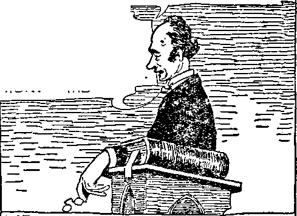

’John A Our.
L Box 161
Clarkton Mo 10-21 >22
Feb. 1, 1922, Vol. Ill, No, 62
■■■g Published every other Sk“b week at 35 Myrtle Avenue, Va? Brooklyn, N. D. 8. A.
Five Cents a Copy—$1.00 a Year
Canada and Foreign Countries, ?1.M
Volvmb 8 WEDNESDAY. FEBRUARY 1, 3 022 Nwmbkb 03 CONTENTS of the GOLDEN AGE
LABOR AND
Clergy and Capital and
Chun'hea Keep Labor
Afraid to “Queer” Themselves .
Hillis Will Put Ps Right 2«‘S
ECONOMICS
Radical Clergymen ......._...2T1
The Tyrannical Rfshopa .. 272
Reverends Aid Oppression 273
Flaying a Double Game 273
Conditions in Bridgeport 280
SOCIAL AND EDUCATIONAL
An Education in One Article............ ,„,..279
Changes in School Attendance ._________._____________
Literature and Progress ............. ,
FINANCE—COMMERCE—TRANSPORTATION
Tools of Big Business........265 “Kill Him for Me” ____„..,„270
CiPrict«" StUCl< 2r>7 T1,<1 , l!'llinn*
Their Master—Mammca _.2GS Gohl and Silver —..—..—..J1T4
POLITICAL—DOMESTIC AND FOREIGN
Methodist Political Am
De We Want The Da.r>
Kaiser a Protestant Clergyman .............-
A Christian ( !) Nation ....262
The Vatican Wanted the
The ('icrgymen and Dis-
Would Sliooi All Germans 2<»9
Lawson’s Bi-nutiriil Vision 281
Japan Must Withdraw
SCIENCE AND INVENTION A Lead Pipe Cinch ____________________________________________~.__27l)
RELIGION AND PHILOSOPHY
An Apeod.-ttlon Destined to
Failure ............................284
The Hotting of the Picture 284 l-'rapbecy and Fulfilljiient 285 Pk-tiu'e 1 : The Child of
Picture 2 : The Overflowing Riveg .--......—
Picture 3: The Two Asro-ruilians ..........................
Siring II. Justice Mani fewted .......... ...287
Oaiuipeteut God (poem) 287
pnbflBtaed every other Wednesday W Myrtta Avenue, Brooklyn. N. Y. .Us A.
¥y WCTWWOKTW. HUDGING8 and MARTIN Cl AVION J- WOODWORTH . E. ko»
J?OUERT J. MARTIN .... Buaittei* Men ««■ WM F. HUDGINGS......Sw'j andTaaS,
Copartners and proprietors. Addnee; 96 Myrtle Avenue, tfrooklyo, N. Y.. U. S A.
Five Onts a Copt— SljOO A Yeab romiflN OTFICW. British: 34 Craven' Terrace, Lancaster Gate. London W, 2 ; Conffdinn : 270 Dundas St. W„ Toronto, Ontario I Austraiatnan : 495 Colli of SC, Melbourne, Australia. Make remittances to The Golden Ajzcu >«u*r<4 a* 4«?fwuifitr ei ®**“*^*n« Jk *•.
t, UTf.
Volurpe III
Brooklyn, N. Y., Wednesday, February ], 1922
Number 62
TT IS no new thing for the clergy to be in “ politics. For hundreds of years during the dark ages politics was their only business, and it is the ambition of myriads of them to get .back to the flesh-pots as quickly as any route can take them there.
At a Methodist Ministers’ Meeting in Los Angeles, October 19, 1921, the clergy present formally adopted a resolution to enter politics. There was no , reason for their making any such formal statement of their purposes. They have been in politics, and in successful politics, for a long time. Lord
EDITORIAL NOTE
THE Banner-Herald, of Athens, Georgia, in its issue of September 21, 1921, contains a half-page advertisement bearing the above caption, indorsed by the announcements of the ten principal churches of the city, all denominations.
Beaverbrook, a British politician, writing in the London Sunday Express, after giving the Methodist Church credit for having brought about prohibition of the liquor traffic in the United States, made the statement that the Methodist Church is the most powerful political body that the new world has ever seen.
At the Los Angeles meeting, Dr. Healy, dean .of the McClay School of Theology of the University of Southern California, voiced the general sentiment of those present when in speak-zing on behalf of the resolution he said:
t “Let the church of God take a firm stand; let us ’ ministers go into our pulpits and urge our people to go .to the polls and vote at the general election”.
• We wonder if any of our readers can point out to us where Jesus or any of the apostles offered v*ny advice to such effect to any of the early Church, counseling them to mix up in the poli-||eal activities of the Roman Empire in every possible way. If the early church had received $uch advice, and had acted on it, there would have been no Christians fed to the lions to make a Roman holiday. The thing that the Roman Empire had against the early Christians was that they looked for the promised kingdom of Messiah and would neither hold office nor bear arms for any earthly government.
HE ambitions and activities of the Methodist Church
along political lines shine out in the efforts of members of the Methodist ministry. Thus, Reverend Stuart Bprton Edmondson. pastor of the Lake Forest AI ethodi st Church of Chicago, in explaining why he gave up a more remunerative job as a lifeinsurance agent to take the comparatively unprofitable job of AI ethodist minister, declared that he proposed to put his business ideas into the ministry, and, that he looked forward to creating a model church, one which would be a community centre, a centre for local athletics, a centre for social functions and a centre for local politics.
For refusing to allow their place of worship to be used as a. market-place for the sale of bonds a body of Christian worshipers was mobbed at 17 Hicks Street, Brooklyn, in 1918.
Tn the neighborhood of T^e Golden Age office the local Board of Registry meets in the
First Alethodist Episcopal Church, Clark aijd Henry Streets, Brooklyn, for the transactions of its business. The transfer of many polling places to the churches was accomplished in a very natural way through the efforts of the women of New York state who wish to have a more desirable place to cast their vote than the
barber shop, laundry, or tailor shop. They succeeded in having the laws of New York state amended so that church parlors could be used as polling places without forfeiture of exemption from taxation.
We are not prepared to teach that when the apostle said, “Touch not the unclean thing and I will receive you,” he definitely meant politics. But it would not be an unfair application; for those who have had most experience in politics are usually frank in saying that it is hard for a clean man to keep clean if he enters the political arena. It seems not to have occurred to those interested in bringing the political fights into the churches that they were thereby defiling the church. Indeed, some ministers seem to think that everything is so sweet and clean and pure nowadays that it is quite impossible for it to be defiled at all.
fPlIUS, the Reverend J. P. Westman, Nelson,
British Columbia, preaching June 26, 1921, on the theme, “Finding God in Canada,” made the statement that God is in everything, and in all the relations of life, and that the time would undoubtedly come when such an ordinary thing as eating one’s breakfast would be a sacrament.
If the Reverend Westman believes that eating one’s breakfast is a sacrament, and he wishes to know just what a sacrament looks like, he should not limit himself to a place whore it is eaten at 10: 30 in the morning, in the calm and quiet atmosphere of a clergyman’s home, but should visit a cheap boarding-house at 6: 30 A. M. when fifty or a hundred men are trying to eat as much as possible in the shortest space of time. At some of these boarding-houses the first man at the table gets all the meat. At others it is not uncommon for a man who finds his meat tougher than he thinks it should be, to throw the meat back on the platter for some luckless late arrival, while he tackles a new piece, all of which is sacramental, according to Reverend Westman.
If the clergy were all agreed as to their political faiths there would be a rosier prospect for their entry into politics; but what will happen when they disagree? Reverend W. F. Sheldon, in August, 1920, writing to the New York Times respecting the 1920 Fall elections said: “For those whose wisdom is not warped or dull the issue is pitilessly clear. It is Cox and civilization or Harding and hell.” This is not very ' complimentary to Mr. Harding, and it is especially uncomplimentary to our Vice-President# and it is most so to hell. Men have been sent to ' Atlanta for less than that, Mr. Sheldon.
UST what may happen at any time to those who run counter to the wishes of religious politicians may be gathered from remarks of Reverend Sam W. Small at a convention of the National Reform Association, in Boston. This Association is trying to get the name of God into the Constitution, and Reverend Sam waxed elo- . quent respecting dangers that threaten because of those who do not share his belief that all will t be as it should be in this country and with the United States Government as soon as this can -be done. Reverend Small discoursed as follows: k
“The department of justice in Washington has classified and named more than 1,200 of these persons. If the tirades of these agitators are not stopped, the volcanic rage of the multitudes who are being daily mis- v educated by their preachings will burst forth and destroy our country. When a nation denies its God it is ./ destroyed, and not even all its armies and navies with the new and terrible forces placed at their command in recent years can stop it. The only remedy, and it is a -sure one, is to make it a Christian nation. Embody the principles of the Ten Commandments, the Sermon on -the Mount, and the Golden Rule in the government of any nation so threatened; and it will be saved.”
It will be observed that the Reverend Small v does not believe in the freedom of speech which the United States Constitution guarantees, and which so many misguided Reverends in our day are trying to destroy.
Politicians are quick to link up, and to make ; use of clerical advances into politics. When the Reverend Manning of Oil City, Pennsylvania, preached a sermon attacking the highway system of Western Pennsylvania, the representa- -fives of the state highway department called on ■= the Reverend immediately to ascertain his wishes. When Missouri had her centennial celebration of statehood in October last, plans were formed for the clergy of all the churches to ' unite in preaching centennial sermons. Who t ever heard of the Lord or the apostles preach- ' ing a “centennial” sermon? .
With a keen discrimination of just where and J how deals are fixed up to keep the unholy alii- > ance—preachers, politicians and profiteers—in ■4=8 power and to so administer things that the burden of taxation falls heaviest on those least able to bear it, while the civic improvements are principally in the neighborhoods of the well-to-do, Reverend Allen A. Stockdale, pastor of First Congregational Church of Toledo,address-ing the Kiwanis club of that city, chose for his topic, “Government by Luncheon Clubs,"' setting forth the practical suggestion that “it is much better to discuss city government when eating than at any other time”.
IS THE human family desirous of another experience such as it had in the dark ages? The clergy in politics means just that. In Italy they have a better understanding of what this stands for than have the people of the United States. After fifty years of inactivity a Catholic party reappeared in Italy, i and straightway the
: Government in power
k placarded the walls of the city with posters, one of them which read: “Voting for the - Catholics means a clerical dictatorship and the bringing us back to
; the time of Giordano Bruno the philosopher, who was burned at the stake by religious in. tolerance”.
> There is the same spirit of intolerance among ' some Protestants that there was and is among some Catholics. Frank P. Bennett, speaking at - a meeting of the Clarendon Street Baptist < Church, Boston, urged the passage of a law for a compulsory church attendance. Wouldn't that f be a fine prospect for those who believe in the principle of human liberty?
In a sermon during the World War the Reverend Dan F. Bradley, of Cleveland, said:
“Today we recognize no distinction between politics and religion. The war is the acme of politics. It is making people think of the questions raised by the war and compelling them to know that religion must enter politics or the world will become the monstrous thing that the kaiser desires. Men of the kaiser’s class have kept Christianity and politics apart, but we know the spirit of religion should be enthroned in the very heart of political life.”
Kaiser a Protestant
Clergyman
HE kaiser was the head of the Lutheran church in Germany, one of its regularly ordained ministers. He was also the head of the political life of Germany; and if the Reverend Bradley will tell us whether he recognizes the Lutheran church as a Christian church we can then tell what he meant by the kaiser keeping Christianity and politics apart.
Not all ministers are agreed that it is time for the church to enter politics. Answering his own question, “What did Jesus teach?” Reverend Doyle, of Taber-n a c 1 e Presbyterian Church, Springfield, Mo., said, in part:
“If we view the Lord Jesus as a politician, only then we behold a failure. For Jesus voted for no governor, ran for no office, organized no political party, advocated no legislation, and proposed no tax. He lived when orphans roamed the streets, when lunatics went abroad and slept in the tombs of Gadara, when the blind begged by the roadside, when lepers were cast out to die beyond human hands, forbidden to enter a human habitation. Yet we get from Jesus no word about orphan homes, institutions for the blind, asylums for the insane, pesthouses or hospitals. ... If one church organization as such goes into politics, advocates legislation, and pleads
before legislators, then the gate is opened and discriminatory legislation is only an incentive for all ecclesiastical bodies to enter with pleas. What a medley would our legislative halls be if all religions came thither to advocate their remedies and to promote their tenets! There would be the Protestant church asking for the prohibition of whiskey, and the, Jewish church asking for the prohibition of hog meat. There would be the Catholics asking for a law to close the meat markets on Fridays, the Seventh Day Adventists asking that they
WE COALMEND this statement of Reverend
Fiske to the attention of the United States Supreme Court, which we understand has recently decided officially that the United States is a Christian nation. In a land where the majority rules, and where the majority are pagans, it seems a little difficult to see just where the right outers to call this a Christian nation.
be closed on Saturdays, and the Presbyterians that they be closed on Sundays.”
Dr. Charles M. Sheldon, author of “In His Steps”, in his first editorial as editor of The Christian Herald said:
“As a matter of historical fact,ecclesiasticism has invariably kept the world in an atmosphere of ignorance and superstition. Many people today think that all that is needed to make a safe civilization is the making and enforcing of law. Legislatures and congresses are constantly passing new laws. At the tame time laws and treaties are being constantly broken and trampled on by those who are lawless at heart.”
Bishop Charles E. Fiske, of the Episcopal diocese of Central New York, addressing the Syracuse Ministers’
— AbiO XHG Arc ’Society Will MEET HERE FRIDAY EVENING at EIGHT O’CLOCK.
THIS MORNING WETHR.EN, I SHALL DEVOTE THE TIME. TO AN ANALYSIS OF TWO IMPORTANT ISSUES OP THE APPROACHING
PRESIDE.NTIAU ELECTION. THE
just a half= a second, paitson, and I'll Be OUT OF HEREl T GO To CHURCH for (Relief from the Cares of this CRAZY WORLD, ANO IF I CAN’T FINO Relief here I’ll carry on till I DO FIND A PREACHER THAT KNOVUS H|S business 9.1
Association, made it clear that he is one of those who think that the church’s commission is not to direct the affairs of the world at this time, and in the church’s present condition. He said:
“For heaven’s sake don’t let us get into the cigarette and tobacco reform and preach an entirely negative Christian itv. Nobody would think of calling Syracuse Christian. Our experience in the war when we dealt with a cross-section of society in the training camps and found fifty or sixty or seventy percent of the soldiers .•K-tuallv pagan determines this. The state is pagan.”
//(
Repmduced by permission
In a speech delivered at Dallas, Texas, March 11, 1920, Senator Joseph W. Bailey, of Texas, replying to a charge that he was against the churches denied the accusation and gave pointed ex-pression to some wholesome truths in the following language :
“The real fact is that I am the church’s best friend, because I am trying to save it from these preaching politicians. The church cannot be a political and a religious body at the same time. It may be partly religious and partly political; but it cannot be wholly religious and partly political, because no thing can be the whole of itself plus a part of itself; and we know full well that just as a church becomes political it ceases to be religious to the precise extent that it becomes political. You
take one of these preaching politicians; if you will not do what he tells you to do he will make you, by joining church and state.”
Another statesman in New York state, Representative Ifackenburg, in order to show the folly of trying to legislate piety into people, proposed to define and limit the law which con- .-tains provisions against racing animals and" ■ ? racing machines on Sunday. He therefore introduced a bill in the Assembly making it illegal
in the State of New York on Sunday to here' after race aardvarks, aard wolves, agoutis, and so on down the alphabet through orangoutangs, ouakeris and pandas to sewing machines, steam rollers, typesetting machines, and washing machines. Following the roar of laughter which his bill created, Mr. Hackenburg insisted that the legislature should be consistent, saying:
“If you stop motion pictures on Sunday, you condemn to idleness a lot of people whose only free day is Sunday. And idleness breeds mischief and crime. What will young people do Sunday if they can’t go to the pictures, or if the dance-halls, decently supervised by the police, are closed? They will resort to dives, io secret meeting-places, to underground dance-halls that hide from supervision. This sort of law will force them to be bad. And nobody really wants to be bad.”
V
I-
»*»■
' THE clergy are for peace; but it would seem as if the peace many of them desire is rather the peace that the world giveth, and that they have not noted the import of the Master’s word. “My peace I give unto you; not as the world giveth give I unto you”. Philip Gibbs, who went through the whole of the World War as a news. paper correspondent, said that long after the soldiers whose hands were red with human blood would have gladly ended the World War, and on better terms than it was ended:
“Men high in church who spoke from many pulpits . in many nations, under the Cross of Christ, still stoked . up the fires of hate and urged the armies to go on fight.. ing ‘in the cause of justice’, ‘for the defense of the
fatherland,’ ‘for Christian righteousness,’ to the bitter end”.
We do not know where Mr. Gibbs obtained the data for his statement; but we do know that on October 14,1918, the pastors of Detroit wired ' President Wilson warning against a premature , peace, and we also know that Bishop Rhine: lander, of the Protestant Episcopal Church,
Voiced the same sentiment in the following ini' famous and blasphemous language:
£■’ “There would be deadly danger in premature peace. L. If we believe that the War is the greatest work for ; righteousness which God has ever given our nation, then it is the greatest Christian opportunity which Christ r has ever set before us.”
THE “opportunity” to which, the Bishop referred was the opportunity to get into politics in a big way which the clergy hoped would come to them, soon or late, in connection with the peace program. Hear the blasphemous words of the Federal Council of Churches, issued January, 1919:
“The time has come to organize the world for truth, right, justice, and humanity. To this end as Christians we urge the establishment of a League of Free Nations at the coming Peace Conference. Such a league is not merely a peace expedient, it is rather the political expression of the kingdom of God on earth. The League of Nations is rooted in the gospel. Like the gospel, its objective is ‘peace on earth, good will toward men’. Like the gospel, its appeal is universal. The heroic dead will have died in vain unless out of victory shall come ‘a new heaven and a new earth wherein dwelleth righteousness’. (2 Peter 3:13) The church can give a spirit of good-will without which no League of Nations can endure.”
Within two months from that time President Wilson was back from Paris with his first draft of the League of Nations.
While the League of Nations treaty was up before the senate for discussion a memorial was presented to that body signed by 13,583 clergymen scattered among the different denominations as follows:
|
Methodist .............. |
.....3808 |
Lutheran .................. |
............. G44 |
|
Presbyterian ______ |
.....2-10!) |
Episcopal .............. |
____________ 516 |
|
Baptist ..................... |
„_1784 |
Roman Catholic |
_____314 |
|
Congregational ________ |
.....1399 |
Universalists_______ |
__138 |
|
Christian...................... |
_..11G3 |
Unitarian ......... |
............ 125 |
|
Miscellaneous .......... |
..._1162 |
Jewish ........................ |
............. 121 |
The memorial read as follows:
“Wo, the undersigned clergymen, urge the Senate of the United States to ratify the Paris peace treaty embodying the League of Nations covenant at the earliest possible date, without amendment or such reservations as would require resubmission of the treaty to the peace conference and Germany”.
AFTER strenuous efforts the clerical endorsers of the League were increased by 1,726 more names, among them the late Cardinal Gibbons’. The Reverend Gibbons’ position in the matter was the same as that of the Vatican, which was expressed in the following terms:
“Things being thus restored, the order required by justice and charity reestablished and the nations reconciled, it is much to be desired, venerable brethren, that all states putting aside mutual suspicions, should unite in one league, or rather in a family of the peoples, calculated both to maintain their own independence and safeguard the order of human society.”
When the Vatican made these cheerful remarks about order being restored and people being reconciled to each other and their mutual suspicions being set aside, they neglected to explain why the Roman Catholic priests in Poland caused five hundred of their Ukrainian brethren of the Greek Catholic priesthood to be cast into prison. To be sure, it was an excellent opportunity to get rid of them, but it w’as a poor way to “set “mutual suspicions” at rest. But the Vatican was doubtless counting upon propaganda to allay whatever “mutual suspicions” might be pointed in their direction; and propaganda is the great thing nowadays; it can do almost anything desired, and no one knows it better than the “Man of the Tiber” who has been a past master in its use for sixteen centuries.
In the fall of 1919 three hundred clergymen of the Rock River, Illinois, Methodist Conference sent a resolution to Senator Sherman of that state urging the ratification of the peace treaty and the league covenant, and the senator wrote back to them that if they knew no more about the plan of salvation than they did about the League of Nations he was of the opinion that their congregations needed new spiritual guidance.
The clergy for some time have been playing possum with the League of Nations, but hanging on to it tenaciously. As late as the summer of 1920, the Federal Council of Churches of Christ in America sent forty clergymen to visit nineteen countries abroad with the object in view of furthering the prospects and power of the League of Nations.
THE new fashion in the United States is that the people, in the effort to escape from their oppressors, elect presidents because of something that the candidate is supposed to stand for; and then when the president gets into office the first thing he does is to set about doing the exact opposite of that for which he was elected and which was known to be the people’s ardent wish.
President Wilson was elected on the slogan, “Ue kept us out of the war,” while seven weeks before the election there was maintained a secret committee in Wall Street, engaged in drafting the laws preparatory for the war into which he expected to force the country. Presi-
Bbookltk, & X*
dent Harding was elected because he would keep ’ us out of the league; so he calls the league a Disarmament Conference; and everything pro- ' ceeds as before. It took a little time and a little propaganda to shift the scene of the conference from Paris to Washington, but the principals < are the same and so are the principles. All hands have learned something since the “villainies of Versailles” were perpetrated; but they have not learned much, or they would not have been at it so soon again.
The first outward American move toward the new League of Nations—addressed 10 the Reverends to give it a holy send-off—was by General Tasker H. Bliss of the War Department. President Harding was hardly more than warm in the presidential chair before General Bliss wrote a letter to the Church Peace Union (a combination of the clergy of the Federal Council of Churches of Christ in America, the National Catholic Welfare Council, the Central ■ Conference of American Rabbis and the United Synagogue of America) in which he said:
“If the clergymen of the. United States want to secure a limitation of armaments they can do it now without any further waste of time. If, on an agreed-upon date,, they simultaneously preach one sermon on this subject in every church of every creed throughout the United States, and conclude their services by having their congregations adopt a resolution addressed to their particular congressmen, urging upon them the necessity of having a business conference of five nations upon’ this subject, the thing will be done. If the churches cannot agree upon that it will not be done until the good God' puts into them the proper spirit of their religions. The responsibility is entirely upon the professing Christians-of the United States. If another war like the last one should come they will be responsible for every drop of blood that will be shed and for every dollar wastefully expended.”
The key to the above statement lies in the-force which attaches to the expression, “The thing will be done”. How did General Bliss of- * the War Department know that the State Department and the other departments of the government would concur in the plan for which ; he was spokesman? And how did he know the : churches would have the power to force the Government's hand? The answer is so obvious that a child may see through it. It was all a. ’• scheme on the part of the administration—with Britain in the background, operating through.^ 5 her secret service propaganda office maintained J at 44 Whitehall Street, New York city, for mak- ,J|
ing the clergy the goat of the new League. The administration can now claim truthfully that it was pressed into the League, and so it was; for • the program went through without a hitch. One can hardly suppress a yawn as he notes how faithfully the puppets danced as the various strings were pulled.
ON OR about May 25, 1921, less than three months after President Harding was seated because he kept us out of the League, Reverend William P. Merrill, President of the Church Peace Union, began beating the tomtoms to muster the hosts of sanctified superstition to do their appointed stunts. At that time he sent out a request to 120,000 clergymen, asking each of them to preach a sermon on the duty of reducing armament, because ninety-three percent of all the federal income goes for wars past, present, or dreaded, and because it was obvious that “ a man who should spend ninety-three percent of his income for insurance would rightly he judged incompetent to manage his property”.
In these days when addressing machines are a part of every office equipment it does not take long to run off 120,000 addresses, so the labor and expense of sending out this notice was very small. Acting as the spokesman for the various associations of Reverends back of him Reverend Merrill named June 5, 1921, as the day for the special sermon on the subject.
The program secretly inaugurated by the British-American Government called for three things: the reading of the call to the congregation, the inviting of the congregation to send a strongly worded resolution to their congressman, and the authorization to the Church Peace Union to sign a petition to tine President and Congress urging them to take the “initiative” in calling a conference of the nations to consider the question.
Twenty thousand of the one hundred and twenty thousand clergymen addressed authorized the signing of their names to the petition. President Harding thus succeeded in getting for his league all the fifteen thousand that petitioned Mr. Wilson for his league, and five thousand to boot. All this would be considered good business by those ''■’■o understand business, and it is not unlikely that Roger Babson or some other business engineer was well paid for devising and handling the “pulling off” of this little piece of propaganda. It was all very cleverly done. These facts prove a frame-up perpetrated by big business, big politicians, and big profiteers to inveigle America into the League whether or not.
Did you ever hear a frog croak? If not, listen to the croakings of Bishop Shayler of the Episcopal Church. It is an episcopal letter addressed to all the churches of his diocese respecting their activities for June 5th. Without a doubt Bishop Shayler was one of the most enthusiastic of war-boosters during the World War. But hear him now, now that his masters the politicians and the masters still higher up, big business, have decided that for the present they must call a halt:
“The church of Christ is called into action. In spite of the waste and woe of war, the unspeakable horrors incident thereto and the burdens of taxation upon our people, the Congress of the United States is engaged in a program of building both army and navy into enormous machines of men, guns and ships, to say nothing of increased economic burdens, which the people ought not to carry. This threatening warlike development is likely to incite other nations to the same action.”
IT IS passing strange, as the New York World remarks, that none of these clergymen should have thought of this thing until it was proposed to them by General Bliss. The World says, very truthfully:
“Bv all the logic of religious teaching, they should have initiated the movement they are now asked to join. Thev should have led the way.”
Occasionally there is a body of men wise enough to see the inconsistency of rushing wildly for war in 1918 and rushing in the other direction less than three years afterward. A certain body of Christians in Michigan voted against the resolution urging an international conference to discuss the disarmament question, and their position seemed quite consistent to a gentleman of the same state, Mr. M. W. James, who said in a letter to the Detroit News:
“If war is right, then why disarm? And if it is not right, then whv do the ministers boost it at any time? There’s something radically wrong with our plan of running the churches, when we cannot stand committed to one idea—firm and unchangeable as the foundation! of the world.”
There is no doubt that the big-church leaders know what they want and that they are determined to get it. Thus it does not seem to us a mere coincidence that the British Archbishop of Canterbury should issue an appeal to all Episcopal churches to set apart Sunday, November 6, as a day of prayer for the divine blessing on the Armament Conference, and that the American Federal Council of Churches of Christ in America should set apart the very same day for the very same purpose. And we wonder if this order came to America through its British propaganda clearing-house at 44 Whitehall Street.
For some reason or other the Roman Catholic Church was five days off schedule, but perhaps there was a reason for this. It would not look just right to have all the churches periodically selecting the same day for similar work. Accordingly Cardinal O’Connell, of Boston, fixed upon Armistice Day, November 11, as the time when the priests of his archdiocese would o ffer their prayers and assist at mass to finish up the job that the Protestants left unfinished.
Shortly before his death Premier Hara of Japan expressed the conviction that President Harding in calling the Armament Conference was the instrument of God, but as Japan confessedly believes in some eight million deities we are left somewhat in the dark as to which God he meant. Possibly he meant “the god of this world”, but not having a clear view of the subject did not express himself with the greatest accuracy.—2 Corinthians 4:4.
Abraham Lincoln once said: ‘Tabor is prior to and independent of capital. Capital is only the fruit of labor and could never have existed if labor had not first existed. Labor is the superior of capital and deserves much the highest consideration.”
The truth of this statement is so evident to any honest mind that it is inconceivable how any other conclusion could be reached; but the clergy of today while actually backing capital are attempting the impossible by seeming to be trying to back labor.
The normal position of the clergy toward labor was illustrated in Pittsburgh and Buffalo in the fall of 1919, when labor made its bootless effort to gain the eight-hour day and other
Brooklyn, N. I.
decent concessions from the billionaire steel trust. At that time the newspapers of these two steel manufacturing centers contained fullpage advertisements given over to advice of clergymen, Roman Catholic and Protestant, urging the workers to forget their grievances and return to work. In one of these announcements, a Roman Catholic dignitary declared that if any Catholics failed to heed-his warning, “I should regard them as apostates from the Catholic faith, traitors to their country and enemies to authority”. Nothing was said about who paid for the ads.
TD REE building sites for churches and par-sonages, and many other favors, have been profitable investments for many of America’s great corporations. At the town of Steelton, i Pennsylvania, the site of the great Pennsylvania Steel Company’s plant, it was a standing j joke for many years among the officials that a -strike was an impossibility, because the moment ' d one was brewing, or in fact the moment at- d
tempts were made to form a labor union, the local Roman Catholic priest would call all his congregation together and threaten to send ' i them all to hell unless they abandoned the attempt. It can he readily understood how such assistance would be appreciated by the steel company. The workers are not always equally grateful nowadays; and when Father Dernben- .3 ski, Roman Catholic priest at Johnstown, Pa., ~ in December, 1919, urged the members of his church to return to work during the steel strike, someone equally misguided in the other direc-tion wrecked his study with a dynamite bomb. -'j
Within the Episcopal Church there is a Church League for Social and Industrial De- Ji mocracy. It is of very recent origin, with seven bishops and about a hundred clergy, earnestly Jf trying to break away from the slavery to Mam- -mon which has been the heritage of the “clergy” for sixteen hundred years. In their magazine, J| entitled “The Social Preparation”, occurs the following passage, which shows how men even - 3 in the clerical business, who are honest, see what use has been made of their confreres in the past:
“It is incontestable that the ruling classes have always ' •"'2 looked to the Church to bolster up the existing regime, however infamous and oppressive. Gibbons affirms that' to a statesman all religions are equally, useful. It would certainly look so when in the late war our pastors were "^3 asked to sell bonds, and specially prepared sermons were sent out by the government for use in the churches of the land. The rulers of this world know full well that religion is the prime motive in men’s Jives; and so when they wish to further certain measures, they go to the rulers of the Church and say: ‘Now we want the people to do thus and thus, and we are sure we can count on your influence’. So now frankly and grossly, now subtly, the Church is enlisted to fight the battles of the State. Balak wants Balaam to curse his enemies; and what is of pathetic moment, Balaam generally does the job. The clergy of Philadelphia were asked to partici. pate in a Liberty Loan parade, and the Church paper stated that the request came with somewhat the weight of a military command.”
Further corroboration of Roger Babson’s statement that big business owns the churches.
FJVIR services which the clergy have rendered to the ruling classes of the past are much the same as are rendered to the ruling classes of today, except that the ruling classes of today, the real rulers, are the moneyed classes. Reverend Robert Whitaker, of Los Gatos, California, is reported by the Boston Globe as saying of the Protestant denominations:
“As crises grow tense their ministers grow nervous about ‘queering’ themselves with the controlling powers of our American industries. Their business is to say nothing and to say it pleasantly. I say with the greatest kindliness that the largest part of preaching the gospel is none other than a conscious evasion, through platitudes and generalities, of questions that vitally interest - and concern the working people—there is a sort of holy soothing-syrup offered to keep the people quiet, and the preacher who tries to wake the people up to the side of righteousness and justice for the commonplace man is in danger of losing his support. The public never bothers itself about the wrongs of the working man till he steps on its corns, and the church is the same. The history of the steel troubles is the blackest chapter in the history of any civilized country ; yet the church said nothing until it was forced to speak, and then it said mighty little.”
Churches Keep Stock Prices Up
Roger W. Babson, statistician and general adviser for big business, has a keen appreciation of the service which has hitherto been rendered by the clergy and makes it plain that the clergy have been underpaid. If you want to get good service out of a man you must pay him well. Notice how bluntly he puts the clergy- forward as the supporters of the iniquities upon which the exaltation of corrupt big business and the oppression of the common people rest:
“The value of our investments depends not on tha strength of our banks, but rather upon the strength of our churches. The underpaid preachers of the nation are the men upon whom we are really depending rather than the well-paid lawyers, bankers, and brokers. The religion of the community is really the bulwark of our investments. Ami when we consider that only fifteen percent of the people hold securities of any kind, and that less than three percent hold enough to pay an income tax. the importance of the churches becomes even more evident. For our own sakes, for our children’s sakes, for the nation’s sake, let us business men get behind the churches and their preachers! Never mind if they are not perfect, never mind if their th-'ology ia out of date. The safety of all we have is due to tha churches, even in their present inefficient and inactive state. By all that we hold dear, let us from this very day give more time, money and thought to the churches of our city, for upon these the value of all we own ultimately depends.”
The same gentleman on another occasion unburdened himself as follows:
“Take the Labor situation. I beg the pardon of clients for talking so much about Labor conditions. I would not do so except that I am convinced it will be the Labor situation which will ultimately bring to an end our present period of prosperity, and throw the nation ultimately into chaos. The solving of the Labor Lituation is wholly a question of religion. The wage worker will never be satisfied with higher wages and shorter hours, any more than you and I are satisfied with more profits and a bigger house.”
Reverend J. M. Rowland, writing in seriocomic vein of the present system which makes of each clergyman “a talking machine grinding out records that come by mail”, and makes of them collectively “packhorses of every propaganda of the earth”, tells just what big business wants of the clergy7:
“Parson, parson, have you any wool? is the cry of propagandists to the preachers; and they want us to answer without hesitation, mental reservation, or a secret evasion of mind: ‘Yes, sir, yes, sir, three bags full -- one for the campaign, two for the drive; keep on shearing while the sheep are alive’.”
We have before indicated how the Disarmament Conference in Washington came into being; how the clergy were made sponsors for it. It is needless to say that big business acknowledges a vital interest in it. At its October, 1921, meeting, the San Francisco Chamber of Commerce passed resolutions attributing the decline of foreign trade arid the reduced domestic consumption of manufactures and luxuries tQ ex-
cessive taxation and to the exhaustion of capital and credit. It did not say anything of the fact that big business deliberately throttled industry in 1921 to kill the labor unions. The manager of the Chamber made the statement:
“American business men have the largest possible stake in the Conference for the Limitation of Arms. Its success is essential to the revival of prosperity, while its failure would be the greatest conceivable calamity in world affairs.”
The San Francisco Chamber of Commerce sent out communications to other chambers of commerce throughout the country, and received responses echoing its own sentiments from chambers of commerce in ninety-eight cities in all parts of the country.
WE HAVE seen nothing more indicative of a desire on the part of some clergy to recognize Mammon as their master than. the i oilowing memorandum sent by the clergy of Durand, Michigan, to the Chamber of Commerce of that city:
“Could it be arranged with the general sentiment behind the movement to have one night known and recognized as Church Night, when for that one night at Irad the Church might have the right of way and all govern themselves accordingly? We do hereby ask the Chamber of Commerce to approve and record this request.”
This prayer of the clergy of Durand, with its request that it be registered by the Chamber of Commerce recording angel is in marked contrast with the following prayer of the apostles, recorded in Acts 4: 24-29:
“Lord, thou art God, which hast made heaven, and earth, and the sea, and all that in them is: who by the mouth of thy servant David hast said, Why did the heathen rage, and the people imagine vain things? The kings of the earth stood up, and the rulers were gathered together against the Lord, and against his Christ ... for to do whatsoever thy hand and thy counsel determined before to be done. And now, Lord, behold their threatenings: and grant unto thy servants, that with all boldness they may speak thy word.”
The critical reader will observe that this petition was not addressed to the Jerusalem Chamber of Commerce.
Durand is not a large city, and its business men could hardly be said to be representatives of big business. New York is the home of the financial giants of the world. Even Wall Street has its “Bishop” who fends forth from the Trinity Church at noon and at the corner of

Broadway and Wall Street reads the Apostles’ Creed, which the apostles never saw or heard of, to try to create the impression that the . Lord is back of the thievery carried on in that vicinity. <
There are other representatives of Mammon at the head of uptown churches, however, that are ji t as ready to do their master’s bidding J at an instant’s notice. There is Reverend Doctor Charles A. Eaton, pastor of the Madison Avenue Baptist Church, New York. While • the war was on lie made the statement, “I think ~ the most honorable place in this country is Wall ? Street". This is the same Doctor Eaton who, addressing the Laundry Owners’ National Association, informed them that when his laundry yi woman had quit because sho caught cold riding home in an open automobile in winter after working all day in a hot laundry, he had told her to go to hell. along with the rest of the extremist.
Hillis Will Pat Us Right
TYoctoi’, Eatox, however, stalking-horse for big
is not the prime business in New
and that the poorly edu-
much more as po
York. That post of honor is reserved for a near neighbor of The Goij'ex Age, Reverend Doctor Newell Dwight Hillis. pastor of Plymouth Church, Brooklyn. Doctor Hillis is an able man: and ho uses his undoubted great abili’y in encouraging men of great wealth to believe that they are entitled to all they have gained; and that they are equally justified in getting as cated hard-working day laborer gets all he is worth.
Tn the Summer of 1920 Doctor Hillis obtained a vacation of two months from his strenuous clerical duties while he lectured throughout the country on these themes. The lectures, of which there are ten, have boon widely advertised and sold for use everywhere. They are illustrated by colored slides.
The Socialist New York Call, guying the Doctor about his one-sided view of things, presents
the following humorous review of his philoso-phy:
boy belongs to the boy, so Doc uses this to give us a lesson on economics. Read:
‘“That boy and that boy alone made the pole and the whistle, but this steel worker was only one of seven in a series who made the steel rail. First was the explorer, who found the iron ore in Michigan; second, the manufacturer who bored the ore and developed the mine; third, the man who risked his savings and built a little railway to carry the ore to Duluth; fourth, the group of men who built the barge to carry the ore to Buffalo; fifth, the men who built the furnace to produce the pig iron; sixth, the man who risked a fortune on a steel furnace; and seventh, this foreign workman, I. W. W., who rolled the hot steel into a rail for the road.’
“Thus you see how railroads are built, mines explored and ore raised to the surface, the ore transported on ■ ^barges and cars to Duluth and Buffalo, furnaces built to smelt it into pig-iron and steel ingots, without a workingman appearing in this series of transactions until the hot steel is rolled into a rail. A ‘manufacturer bored the ore’, a capitalist ‘built a little railway’, a few capitalists ‘built the barge’, and one ‘built the furnace’. Why couldn’t the capitalist have ‘built’ that steel rail as well, considering all the other marvelous feats attributed to him? To bring this workman into a picture when a whole series of transactions show that he has been absolutely unnecessary is to snitch on those capitalists whose occult powers to summon railways, ore, barges and furnaces show that they have God-endowed powers. Fire him, gentlemen, fire him ! This is wretched service to purchase from a ‘reverend’. Really, the profession has sunk to a low level when this sort of Stuff finds a ready market.” •
The Call also goes on to point out that Reverend Hillis laid great store upon the fabulous additions made to the nation’s wealth created by the world’s great inventions, but that Doctor Hillis had failed to mention the equally suggestive fact that practically all of the inventors themselves had died in poverty while the “captains of industry” had pocketed the wealth.
Doctor Hillis is the Reverend who distinguished himself for the following Christ-like sentiments of forgiveness of one's eneui.es, in an address during the war, before the Bronx Union Y. M. C. A.
“I am willing to forgive Germans for their atrocities just as soon as they are all shot. If you would give me happiness, just give me the sight of the kaiser, Von Tirpitz and Von Hindenburg hanging by a rope. If we forgive Germany after this war, I think the universe will have gone wrong.”
Only a few months before that speech Doctor Hillis had gotten in trouble for championing Germany’s cause, but switched when America i ■ ■ abandoned its neutrality. He also had had to ask the forgiveness of his congregation for being mixed up in a questionable stock transaction which cost several of his parishioners thousands of dollars of hard-earned or ill-gotten money. His parishioners are mostly wealthy Wall Street men. We do not know how they got their money. We think it was not by rolling “hot steel into a rail”. It was much more profitable, hence, of course, much more important and valuable work (f)
Doctor Hillis is no fool. He is a rich man’s preacher, but he is not consistent. He knows that America is headed toward the scrap heap because she is money-mad. We select a few remarks from one of his sermons, preached in Plymouth Church April 11, 1920:
“Today it looks as if this republic has lost its soul. One is terrified at the thought of the twenty thousand men who will be murdered this year in this land. The people of the United States have sown selfishness, avarice, pleasure, and lawlessness. They have despised their schoolhouses, scoffed at their churches, enthroned men that had gold, feasted and banqueted them; they have voted ignorant and lawless men to rule over them; we have feted harlots, flattered the rich thieves, honored men that rode in golden chariots, despised the scholar, the artist, the poet, and the prophets, with the inevitable result. Now confront trampled cornfields, bloody streets and revolution, spreading its black fever-smitten, death-laden winds, foul with pestilence, all over tha land. Today we have many mayors and governors and men in high places in Washington who are as impotent in this hour of crisis to safeguard the lives and tha property of the people as so many rabbits.”
Doctor Hillis was a little ahead of time in his prophecy, but according to the Bible not much. One of the things that is helping to bring what he looks for is such devilishness and bestiality on the part of the civil powers as was manifested in the Rhode Island State Prison during the year 1918-19 when a prisoner by the name of William F. Herman w’as strung up by the wrists for periods of two, four, five and six days, hanging from 7 a. m. to 7 p. m., and on days when moving pictures were shown in the prison, until 11 p. m. During those hours he was not given toilet privileges and was not permitted to wash himself at any time for twenty-one days. This punishment was for talking while he was at work in the shop. Yet the Su- ' preme Court of the United States has officially
pronounced this a Christian nation. It must be so. It must be so. It’s so, if it isn’t so!
Bishop Joseph F. Berry, D. D., LL. D., speaking at the Central Methodist Episcopal Church in Philadelphia, made the statement that the church is the best financial investment an individual, community or nation can make. Then he made the grandiloquent statement that “this is the best hour of the best day of the best week of the best century this old world has ever seen and tomorrow will be even better’’. The Bishop ought to know; that is his line of talk; that is what he is paid to preach.
ishop James Atkins of the Methodist Episcopal Church South is a good second to

Bishop Berry. At a conference of his church held at Memphis in February, 1921, lie said: “If you find a pessimist anywhere outside this hall kill him for me. A pessimist is worse than a Hun.” Bishop Atkins, haven’t you heard that the war is over?
Bishop William A. Quayle of the Methodist Episcopal Church, thinks he has located all the trouble. Speaking at Baltimore in June, 1920, he said: “The very existence of our republican form of government in this country is seriously threatened because of the attempt of organized labor to dominate the halls of Congress”.
The Methodist Church in America is “traveling on high” since it brought about prohibition of the liquor traffic. The money comes rolling in. The First Methodist Episcopal Church of Chicago is building a combination church and office building 21 stories, 260 feet in height, surmounted by a spire 140 feet tall. There will be chimes in the tower loud enough to dominate the roar of the traffic in the street 400 feet below.
The Presbyterian Church is “traveling on high” also. William Jennings Bryan has brought to light the fact that in some of the Presbyterian seminaries the endowment is so great that it is with difficulty that the interest can be used, due to dearth of students for the ministry. This matter is now under investigation by the General Assembly of the Presbyterian Church,
Billy Sunday is traveling on high, too. We do not know just how he is making it go since he got down to working the one-horse Bush League towns, but we are informed that his haul for a ten weeks stand in Chicago in the. 4
Spring of 1920 was $222,000. This was about $5 a piece for the 48,341 trail hitters corralled during the meetings.
It’s an ungrateful world. Now according to the New York Times'.
‘‘Coming as a result of overwhelming sentiment expressed at conferences, according to the Reverend C, P. Zahniser, Secretary of the Federated Council of Churches of Pittsburgh, a decision not to encourage or to lend financial support to ‘imported’ evangelists has been reached. It is the intention of the council to refuse to share responsibility or expense with campaigns of th$ Billy Sunday or Gypsy Smith type in the future. Ac1 cording to the opinions voiced at these sectional conferences, the evangelistic campaigns of the Sunday and Smith type are too high priced, too much commercialized, obsolete, false in stimulation and ineffective.”
The preachers might have added, Too blasphemous, too vulgar, and too obscene’.
The same Reverends were ready to mob Bible students at the time when the Reverends themselves were sitting on platforms and listening to Billy Sunday vilify them. It was a wise man that remarked, “Every dog has his day!”
UT the profits of religion in the Methodist, Presbyterian, and Evangelistic line pale be
fore the results obtained in the Roman Catholic
Church. An intelligent Hebrew, recently critieiz- ' ed by a friend for the untold wealth piled up by the Rothschilds, silenced his critic by asserting ‘ that the money did not belong to Rothschild, but to the Roman Catholic Church. This seems ' reasonable in view of the following item: ’
The New York Times, of November 2, 1920, j gave the details regarding a lawsuit of Arch-—, ; bishop Hayes, before Referee Brennan, wherein , the archbishop was awarded a claim of $369,- y 762 against the estate of the former rector of ..-i the Polish Roman Catholic Church of St. Stan- J islaus, for funds misappropriated. If the Rev- ; erend Strzlecki, against whom the claim was, -x filed, managed to make way with as vast a sum '' as that, from one congregation, before he was J detected, one can faintly imagine the vast sums ; flowing into the coffers of the greatest moneymailing institution on earth, and the oldest. A
In the light of the foregoing information one can appreciate the remark of Reverend H. Pippen, of Rockhaven, Saskatchewan, at the morn-
t-
ing session of the seventh annual convention of Baptist churches in Saskatchewan, when he said: “We are developing a ministry that is highly intellectual, indifferently spiritual and damnably commercial”. Who says there is nothing in a name?
fT? IE old-timers among the clergy are the same as ever they were; but there are some honest men in the ministry, and they see that the old order has had its day and are scanning the horizon to see what can be done to better ■ things. It is a great compliment to any body of men to receive the reproaches of the Lusk Committee of the New York legislature; and these men have done so. The Committee says of them: “There is an ever-growing tendency toward radicalism in the clergy. Much of this attitude may be explained by the fact that they have been and are grossly underpaid, and for this reason they are unable to see economic problems in their proper proportions.”
ft
"D everend Bouck White has explained to the
New York Sun where the new tendency toward radicalism originated; and it is in the most unlikely place in the world, that hotbed of Higher Criticism, the Presbyterian Union Theological Seminary. Reverend White referred to Moses as a labor leader, commissioned by the Most High to organize the brickmakers of Goshen. He stated that the Book of Exodus is the story of a labor walkout and referred to his instructors as follows:
“The Bible is one long cry for human and popular rights, against the arrogance of the moneyed mighty. Professors Hall and McGiffert, and Gagnani and Adams Brown at Union, yes, and President Brown himself, are deserving of a place alongside Karl Marx; for in their . discoveries as to the real, the social meanings of the Biblical writings, they are planting mines of social dynamite underneath this civilization of massive property rights to blow up the whole apparatus.”
Reverend George S. Lackland, Pastor of Grace Methodist Episcopal Church, Denver, voiced the same thought. When asked, “Where in the world do all the younger preachers get fdl of their radical ideas?” he replied:
“We get our radical ideas—if you want to call them that, we call them Christian ideals—from the course of study in the theological seminaries. We found that either
we would have to be hypocrites when we stood in the pulpits or we would preach the doctrine of common humanity. You will find that in the great financial journals there is a dualism in the editorials. One is,, ‘Deflate labor’; the other is, ‘Increase the salaries of the preachers’. And there is a reason. They say: ‘These preachers have been starved, but if they are fed up and fattened they will forget the troubles of the people with whom they associate’.” .
fTV IE clergy and all organizations under or ' J- partially under their control are in a predic
ament. They cannot secure and hold any considerable following of the lowly and oppressed without doing or saying something that will show they have some real interest in them. Doing or saying anything worth while is radical- . ism (going to the roots of things) and when any religious body tries to do that it incurs the hostility or enmity of big business.
The Young Women’s Christian Association of Pittsburgh tried to alleviate conditions of employment in Pittsburgh by teaching some economic truths. Thereupon the Pittsburgh Employers’ Association not only hampered the Y. W. C. A. in its drive for funds, but actually gloated over its success in so doing. The Pittsburgh Ministerial Union notified the Pittsburgh Employers’ Association that it resented this; and Reverend Harry E. Fosdick, pastor of the First Presbyterian Church, of New York, speaking on the same subject at the annual dinner of the alumni of Union Theological Seminary said:
“The persons who have launched this attack apparently propose to settle the matter of the social application of the principles of Jesus by money. ‘Determined to discontinue financial support’ is their proposition. ‘We will buy you’ they say to the churches and. in particular, to the ministers of the churches. ‘If you do aa we say, money; if not, no money.’ . . . One looks with fear upon an announcement like this from Pittsburgh; for this letter indicates the surest and swiftest way to land this country in violent social revolution.”
The clergy7 are human beings, the same a8 ‘ other people; and as their expenses are thg same as those of other people, and their earnings are usually small, some of them are really at heart more in sympathy with the lower classes than they are with those who constitute their chief supporters. Thus every clergyman in Oakland, California, is said to be a member of the ministers’ union, which, in turn, has dele-
*-is,
gates in both the Central Labor Council and the Building Trades Council.
Bishop Hendrix, of Kansas City, in an ad-dress before the Methodist Conference at Richmond, Virginia, made the statement:
“Jesus has the workingman at heart. Christ is not for the wealthy, or the prosperous, or the poor only, but he is for that great body of men who form the toiling masses of the world. And more and more it is becoming necessary that these toilers know their fellowworkman, Jesus Christ, better.”
T THE same Conference there was an interesting time when some of the underpaid toilers in the clergy business got together and wanted several things. They wanted the general board of the Methodist Episcopal Church to exercise its authority a little more mildly; they objected to always having the eagle eye of the Bishop focused upon them; they sorrowed that ministers who did not live up entirely to the instruction of the general board would find themselves started for the junk pile; they wanted copies of the charges to be presented against them at conferences, so that they might have ten days to prepare and file answers; they wanted a legal voice in the appointments of the church, a right of which the Methodist clergy and laity are entirely deprived. There was quite a stormy time at this session; one opposer of these men having their just and reasonable rights, a mouth.piece of the Bishop, backed up the tyrannical bishop-system as follows:
“I want to to this conference that if this meeting called for this afternoon is what I understand it to be, it is a Soviet meeting and there is Bolshevism in this conference. This meeting is being called without au-thoritv. We do not know who calls it or why it is called. The Bishop knew nothing of it.”
One of the most enlightened and liberty-loving of the clergy of modern times is Bishop Charles D. Williams, Episcopal Bishop of the diocese of Michigan. The Manufacturers’ Association of Detroit made an attack upon him because of his standing by the statement that the United States is today in the control of an invisible government; but he stood by his guns, denouncing the boycott of the Pittsburgh Y. W. C. A. as one of the foulest pages in American history. In an interview in May, 1921, he said :
“Money is necessary in carrying on business; but in the new order, which will come just as surely as the new family order has come, service, not money, willbe-the paramount object. The church must enlarge and democratize the basis of her support, so as not to be dependent upon or subservient to any class, high or low; or she must be content with more meager support . and restricted operation. Her Master was poor and v persecuted, but free, and it may be that He is now calling His Church to follow in His footsteps.”
Another enlightened Bishop is Bishop Gore. At the Anglo-Catholic Congress in London he said:
“The whole economic, and industrial system of the eighteenth and nineteenth centuries was allowed to., grow up as part of our national institutions, as if religion and the Church had got no words to say to it; yet from end to end it trampled on the root of principles of brotherhood; it was associated with a legal system which set an infinitely higher store on property than on person, and it quite forgot the root meaning of justice”.
IT TS a matter of history that the Interchurch World Movement was ruined because it had a committee which dared to tell the truth on the steel question. That committee furnished the proof that the Steel Trust maintains the A twelve-hour day, wages below the comfort level, refuses collective bargaining and administration, and employs detectives, spies and thugs. Moreover, after the “Movement’s” financial ruin for telling these truths the men who wrote the report bravely maintain that they told the truth —and they did.
The report tells some things to make an American hang his head in shame that we live in a land in which such things could be possible. Among other interesting things the report records the simple facts that the newspapers of Pittsburgh during the steel strike made no ef- -fort to tell the truth. Without exception they J refused to discuss the causes of the strike or 1 to tell the truth about the number of men on strike. i
The newspapers falsely stated that the mills were running in full six weeks before they ac-tually were. When there were six hundred men V at work in the Cambria mills the headlines of the Pittsburgh Post, Chronicle-Telegraph, Sun ; and Press reported that between seven and ; eight thousand men had returned to work. The Chronicle-Telegraph and the Gazette-Times ’ contained stories that the strike was pro-Ger* man in its origin, which was a lie. i'
7 ItaaUABY 1, 1922
' ' Whenever the State constabulary clubbed,
shot or murdered strikers the Pittsburgh newspapers reported these outrages unfailingly as , being riots for which the victims were to be blamed! Thus, when Nick Gratichini was murdered by State cossacks, while sitting in his own dooryard with his baby on his knee, the Pittsburgh Chronicle-Telegraph reported that he was skillfully picked off by troopers while snip-“8- . . .
■■ In another instance in which a woman was hit by a bullet while standing on a street corner, and a male companion standing by her was killed, the Pittsburgh Press printed a story of how a brave State trooper had killed a striker ’ by firing at the flame of the hidden sniper’s revolver. The man killed was not a sniper, was not hidden, did not shoot, and had no revolver from which a flame could come.
The report shows that the steel-workers were living in congested and intolerable surround; ings, most of them working 10 to 14 hours daily, many with a 24-hour shift every two weeks, and . large numbers working every day iu the week. Always, in every instance, the grievances, statements and testimony of the strikers were presented in the newspapers under such headlines or in such context as to convey the impression that what the workers desired was unreasonable and that their grievances were imaginary, f Every one of the Pittsburgh papers during the strike used its influence in the support of poli> ties which were against the general public in> terest.
The report proceeds further to show that the -,r attitude of the clergy of Pittsburgh was exactly ■ the same as that of the press; that it did not , examine or discuss the causes of the strike, nor p seek to exert a wholesome restraining influence / on public officials who were overriding the pro. visions of the United States Constitution regard-
■ ing the right of free speech and public assernb-
? lage. It did not even attempt to create a public
" opinion that would demand a discussion of the circumstances under which the Constitution was • violated.
€ THE Steel Trust got out a million and a half IF* ■ •*. copies of their rejoinder to the attacks on R- their methods made by the Interchurch World Movement; but before it was circulated it was V ■ '
BO- .
Th* GOLDEN AGE
i." .
278 .
found to contain so many and so glaring errors ‘ that it was suppressed. However, a Reverend ' —the Reverend B. V. Bigelow—rushed to the Steel Trust’s defence and the Steel Trust cir- -culated great quantities of his brochure, written in their behalf. The Reverend M. D. Collins . of Jackson, Missouri, did not enjoy this industry on the part of Reverend Bigelow and addressed him an open letter containing the following :
“What I surmise was your purpose in this address \ and its later printing I shall not express; but I dare \ venture to assert that when you gave expression to such arguments as are printed in this pamphlet, you were aware that you stultified your own intelligence and insulted the church, adding to the offense by permitting it to be put in print. I am not a Socialist and cannot accept the erroneous philosophy of Socialism, but I am no believer in this camouflaged attack on labor organizations or their collective bargaining. Neither can any well-informed Christian or red-blooded American stand . ; for it, because it is nothing but an organized movement in the capitalistic effort to enslave the workers, whether workers of hand or head. In all charity I state that men in your position, advancing such apologies for corpora-ations entrenched in the evasion of our laws for safety in their wrong doing, are more dangerous to government and national prosperity than all the Socialists among . us’. Whatever your motives or connections, financial or otherwise, that bind you to the obligation to lend your service to this notoriously execrable organization, I do not know nor care, but it is my belief these ties are stronger than those that bind you to the philosophy of the lowly Nazarene.”
SUBSCRIBER to The Golden Age calls attention to the fact that in The Literary
Digest for November 19, 1921, is an article on “Enslavement of the Steel Workers”, discussing the activities of The Interchurch World Movement’s commission of inquiry which investigated the labor conditions in the steel industry. He says:
“The findings of this commission seem to be disavowed by the ‘church’, as not backed by the authority of the ‘churches’, but resting merely on the personal opinion of individual investigators. The thought occurs to me, as a suggestion, that perhaps the ‘churches’ are playing a double game, trying on the one hand to ingratiate themselves with the workers, while on the other taking care not to offend their friends and patrons, Big Business. In Number 46-47 of The Golden Age there is reference to a similar policy pursued in the State of Matto Grosso, Brazil.”
TN THE September 14, 1921, issue of The
Golden Age the question is raised, Why the Gold Standard? The question calls to remembrance the agitation that stirred the country in the Presidential campaign of 1896 over the silver question, when it was proposed in the Democratic platform to arbitrarily fix the ratio of the value of silver in the proportion of 16 dunces of silver to 1 ounce of gold—a theory long since exploded, since it is quite apparent that it would be impossible for the Government to arbitrarily fix such a ratio as long as the two metals have a fluctuating value in their relation to each other, in the markets of the world. For example, the price of silver during the year 1913 averaged 61.241c per ounce. During the latter part of 1918 the price had risen to $1.01 an ounce, and from that time on the price gradually rose until it reached $1.33 per ounce, from which level it gradually receded until in July, 1921, the price was approximately 60.798c per ounce. Fluctuations in the price of silver are determined by a number of circumstances among which may be mentioned chiefly: (1) Quantity produced, of which about two-thirds originates in the United States and Mexico; (2) demand in the Western world, i. e., in Europe and America, both for the arts and for coinage purposes; (3) demand in the Orient, i. e., in China and India, depending mainly on the balance of payments of those countries and on their general level of prosperity; (4) the general price level, or in other words, the purchasing power of gold.
The price of gold is fixed at $20.67 per ounce.
During the war period, and especially during the post-war boom, which was world-wide in its scope, an increasing demand for silver in the arts was an element in its rising price. Another element was the development in connection with silver coinage. At the outbreak of the war there was a large increase in the demand for silver coin, partly because the generally disturbed condition encouraged people to hoard silver, -partly because the higher price level necessitated the use of more silver coin as pocket money, . but chiefly because the armies, especially those operating in the Near East, were drawing pay in silver and spending silver money of the smaller denominations.
An interesting development took place when 274
the price of silver began to rise at the same time that the currencies of the various countries 'jg became increasingly depreciated. *
A more important factor, however, in the rise of silver than any development in the Western countries, was the demand by the two great Oriental silver-using countries — India " and China.
The merchandise trade balance of India, i which has always been favorable, increased de- - • cidedly during the war as the result of the great demand for supplies by the belligerents, and ' of the inability of European countries to export goods so long as their productive energies ' ” were entirely devoted to the war. For the year ending March 31, 1920, this favorable balance ’ was nearly 1,200,000,000 rupees ($583,920,000 in U. S. money, with the rupee at its standard ■: value of .4866). During the year ending March ’ 31, 1921, however, for the first time in a generation India reported an unfavorable trade balance, amounting to 791,000,000 rupees ($384,900,600). This was due to the decrease in the .purchasing power of the world during the depression and to the poor crops in India. ""
The excess of silver imports over exports into -India was enormous during the war years, reaching its maximum in the fiscal year 1919, ; when 237,000,000 ounces w’ere imported. A large. ■ part of this silver came from the United States , «
in accordance with the provision of the Pittman Act, which authorized the United States Treasury to sell to the British Government not to exceed 350,000,000 ounces of silver at $1 an ounce. At that time the silver reserves of India were very low; the Indian population was restive, so that it was imperative for the Government to obtain silver in order to convince the population that the rupee was convertible. In the summer of 1919 the Indian demand for silver ceased.
By the middle of 1919 China found herself extremely short of silver as a result of the wartime drain and of the hoarding due to the unsettled times, while the lack of confidence in Bank notes also increased the demand for silver. Consequently, it was China that caused an insistent demand for silver in 1919, heightened perhaps by speculators, such as to drive the price to its peak in January, 1920, by which time her demand was fairly well satisfied. Ee-
SSit
. Gently hard times and famine conditions have resulted in considerable amounts of silver being taken from buried hoards to be used in the purchase of food. It was this withdrawal of China from the silver market which caused the final drop in silver, which in March, 1921, was worth . about 57c an ounce compared with $1.33 at the peak.
In the case of gold the situation is quite different than the fluctuating one as outlined in the foregoing with respect to silver. The demand for gold is always unlimited. Gold mining enjoys a peculiar advantage which few other industries enjoy. As a consequence of the fact that gold is the standard of value, the price of gold in terms of gold money is necessarily fixed. The gold miner can always sell at a fixed price as much gold as he can possibly produce. He finds his costs rising in periods of booms and prosperity, and he suffers as a consequence. On the other hand, periods of adversity, depression, and falling prices bring to the gold miner, as to no one else, increased profits, lie has an unlimited market in the worst depression, and the more severe the depression the lower his costs of production tend to be.
It should be pointed out, however, that part of the automatic working of the gold standard depends upon increase in gold production when prices are low and upon a decrease in gold production when prices are high. Increased gold production in a period of low prices and low costs makes it easier for prices to rise again, while diminished gold production in periods of high prices and high costs tends to reduce prices and costs again.
In addition, the industrial consumption of gold tends to increase in a period of high prices, since the price of gold does not rise* as other prices rise, while in a period of low prices the . prices of gold manufactures are relatively high, and purchasers of gold manufactures consequently tend to diminish. Variations in the consumption of gold thus also work toward di-ininishing the supply of free gold when prices are too high, and toward increasing the supply ’ When prices are too low, thus tending to correct both the rise and the fall of prices. In this feature of gold production and consumption we have one of the stablizing factors in the gold standard.
At the present time the actual gold, in coin and bullion, in the possession of the Treasury and the Federal Reserve Banks, amounts to approximately $3,000,000,000, which is about one-third of the world’s stock of gold. However, . our national stock of gold is dependent not upon the difference between gold production and gold consumption in the United States, amounting to a few tens of millions, but rather upon the world-wide consumption and production of gold, and upon the course of international trade.
The essential elements of the gold standard are: (1) The instant convertibility of all forms of representative money in gold on demand; (2) the free coinage of gold bullion; (3) the unrestricted melting down of gold coin into bullion; (4) the uninterrupted flow of gold from money into the arts, and the uninterrupted flow of gold from the arts into money; (5) the free export and import of gold.
In the case of silver the situation is quite different, especially in the respect that the unrestricted melting down of silver coin into bullion is forbidden by law in the United States, France, and elsewhere. Hence the rise in the price of silver brought about a peculiar condition as follows:
From November, 1919, to February, 1921, the price of silver was such that silver dollars could be melted down into bullion and sold at a profit, although this was not true of subsidiary coin. At the January, 1920, price (about $1.33 an ounce) the British shilling was worth less than its silver content; this caused a change in the British coinage act by which the silver content of the shilling was reduced from 81 grains to 44 grains, 'which thus reduced the new shilling far from the danger point of melting down. Other countries took similar measures to protect their silver coinage, notably Norway, Sweden, and Holland. Tn France the melting point of the 1-franc piece at the present rate of exchange is very close to the current price of silver, while that of the 5-franc piece is below, so that silver has practically ceased to circulate, some of.it being hoarded and much of it sold. French francs have been smuggled into Switzerland where their purchasing power was two or three times as great as at home. France has requested Switzerland to return all French subsidiary coinage, and all 5-franc pieces. To this end Switzerland has declared this money no longer lawful money within her boundaries. In Germany and Italy the depreciation of the national currencies is so great that silver, at its present
GOLDEN AGE
price, is far too expensive to circulate in the existing coins. The German government was obliged to demonetize silver as the silver content of the mark would be worth more than a mark (at the exchange rate of 1c a mark) if silver was worth as little as 9c an ounce. In Italy the melting point of the lira is 37c per ounce.
The passing of the melting point for several of the important silver currencies brought from Continental Europe into the London market a large supply of silver, which during 1920 is said to approximate 50,000,000 ounces.
From August 1, 1914, to September 10, 1921, the excess of imports over exports of gold amounted to $1,384,639,000. Since the beginning of the present year net gold imports totaled $509,907,000 (to September 10, 1921). Of this amount England furnished $149,387,000; France $145,054,000; Sweden $55,188,000.
This recent movement of gold is the beginning of an effort on the part of European countries to reduce their indebtedness to the United States. This indebtedness is the equivalent of commodities imported from America during and since the war, but only the balances built up since the armistice are an active factor in the present situation, since war-time supplies were purchased largely on Government account and financed by the United States Treasury.
Of gold coming to this country in recent months, a part is now gold produced in South Africa and sold in the London market, an almost equal part came from India via London, and another part is gold exported from Russia to France and Sweden in payment of goods or for the establishment of credits, the latter countries shipping equivalent' amounts to the United States in part payment for their own purchases. The Director of the Swedish Mint has stated that since last January the Swedish mint has received and smelted about 70 tons of Russian gold. The Swedish mint stamp after resmelting gave it its market value in America, whnher most of it was re-exported. This accounts for about $40,000,000 of gold received indirectly from Russia, and there is little doubt that not less than $60,000,000 other gold from Russia has found its way to the United States through France, Switzerland, and other countries.
Un October 31, 1921, the amount of gold on
Brooklyn, *
hand at the United States Treasury was:
Gold coin______________________$ 254,730,071.35 1 A
Gold bullion_____________________ 2,681,530,755.69 ; <
----------------------- 1 ?
total.___________________$2,936,260,827.04 . <
Against this stand the following items:
Gold certificates issued—__$ 884,607,069.00 .
Gold Fund (Federal Reserve
Board) 1,657,020,125.60
Gold Reserve (Against U. S. & .
Trcas. Notes) 152,979,025.63 Gold in general fund____________ 241,654,606.81
total__________$2,936,260,827.04
The Gold Fund, Federal Reserve Board, of -f $1,657,020,125.60, consists of gold belonging to U the twelve Federal Reserve Banks, held by the T Treasury for the redemption of Federal Re- ;,s serve Notes, and also the gold settlement fund ? which is Used as a pool for settlements in gold G transactions between Federal Reserve Banks, J the gold remaining on deposit with the Treasur- ; er of the United States—book entries only being a
made in such transactions. This gold also stands as a reserve for the sustaining of issues of Fed- " eral Reserve Notes, which are required by law b to be sustained by at least 40 percent of gold.' A
Of the amount remaining after deducting the Gold Fund, Federal Reserve Board, it will be A seen that a large amount is made up of gold . against which gold certificates have been issued, i. e., $884,607,069.00.
From the above it -will be seen that much of ' the gold held by the Treasury sustains issues of currency in the form of gold certificates or Federal Reserve Notes—the physical gold re- S maining on hand, while the circulating medium " is represented by the currency as indicated. -Herein lies one of the strong points of the Gold Standard. The gold, having in itself a stable and intrinsic value, is always on hand for the redemption of currency which it sustains. One of the main reasons for the depreciated condi- -1 lion of currency in most of the European coun- ' tries is that it is not properly sustained by suf- : ficient gold reserve. yj
Additionally there is no danger of the melt-ing-down process being employed for profit in g the case of gold coin, as we have seen has been done -with silver, as the value of gold never ' fluctuates to exceed the gold contained in issues > of coin, for that value is fixed at $20.67 per ? ounce. , 3
In conclusion it might be well to print here the words of wisdom uttered just prior to his death by one of America’s greatest, most respected financial authorities. He said:
“As poison in the blood permeates the arteries, veins, nerves, brain, and heart and speedily brings paralysis
SINCE 1914 wages in New York state factories had risen from 53 percent in the glass industry to 187 percent in the fur business. The average increase was 71 percent in the lowest industries and 136 percent in the highest. The changes represent the actual amount received, though in many instances there were marked changes in the hours of work and the conditions of labor.
The average increase for all industries in New York state up to last summer was 99 percent, including common labor, which, according to the Federal Reserve Bank of New York, had advanced but 84 percent.
The Interstate Commerce Commission is responsible for the statement that the increase in railroad wages in 1920 over 1915 was 119 percent and that the increase in the building trades over 1914 was 97 percent. In the compilation of these figures it was found that increases ranged from 150 down to only 59 percent.
Among the miners wages were advanced in 1916, 1917, 1918 and 1920, which totaled 114.5 percent increase over 1916. In the steel industry the percentage increase in wages was very large.
■ It might be thought that because some wages were advanced a higher percent than others, the greatest wage reductions should be made where the percentage increases were most. In the steel industry the original wage was not over two-thirds of what it should have been, compared with the pay in other lines. This was also true in the mining industry, so that to reduce the pay-roll an equal percentage in all industries would merely bring tens of thousands back to the too-low wage of a few years ago, and leave many with wages relatively high.
Probably the taking away of all the wage gains regardless of percentages might be most satisfactory to employers in the lines originally paying a small wage. To the employers who in pre-war days paid higher wages than they felt they ought to, this arrangement would or death, so does a debased or lluctuating currency permeate all the arteries of trade, paralyze all kinds of business and bring disaster to all classes of people. It is impossible for commerce to flourish with such an instrument, as it is impossible for the human body to grow strong and vigorous with a deadly poison lurking in the blood.”
be unsatisfactory. Of course the employer likes to have his workers do their work for as small a sum as possible. Under some antiquated economic standards the ideal wage was one that just kept the worker alive and in good enough health to be able to do his work and bring forth offspring similarly able to just keep their heads above water. The fruitage of this “ideal” system has been that a host of workers have been quite unable to keep up. They have fallen into the unemployable class, and they and their children have become the class which in England is termed the “Hooligans”.
The Hooligans are deficient mentally and physically. They are good for casual labor only, because they cannot stand the grind of steady work of any kind, and are lacking in the mental vigor requisite to learning an occupation, and in the character to keep at it and improve with the improvement of methods of industry. Their shiftlessncss is attributable in large measure to the exhaustion of generation after generation which came from overwork and under-nourishment, unsanitary homes, and the prevalence of vice among people too crowded and of too weak characters to withstand temptation.
Today there is no class so susceptible to the winds of error now blowing hard upon humanity as that reaching its climax among the Hooligans. They become ready recruits for one economic theory after another with a tendency toward the varieties most liable to subvert the existing social order. They went in England from trades-unionism to Nationalism, then to Socialism and to Syndicalism, and finally are trooping into Anarchism. The reason for this trend is that, through the natural weakness of their bodies and minds, such a class follows the line of least resistance and seeks a level in which it seems that less effort is called for and a greater return is obtainable.
Trades-unionism squarely recognizes the existing order and, orginally at least, urged its members to make the stiffest effort possible in
the direction of capability in work and faithfulness to employers as a means of getting the largest wage return. Later in the history of the movement it became apparent that the number of less capable workers was becoming so large that unless kept in the union they would become a force outside ever tending to break down and nullify the higher standards achieved by the unions. This would result in the destruction of the union and the loss of everything gained in wages and working conditions. Consequently the necessity arose for keeping all workers satisfied regardless of ability, and for the union protecting and standing by the interests of its least efficient members. The union denied the right of employers to discharge any union member regardless of capability without the consent of the union. The employers insisted on the right to discharge on a basis of efficiency. Up to within a few months the battle raged on this line, but the prevalence of hard times and the number of the idle ready to take any position made it necessary for the unions to abandon this line of defense and to concede the point to the employer. In some instances the unions were able to raise wages exorbitantly and to do less work per day, in order that more, especially of the less capable ones, might have work.
In the entire social order civilization tends toward the development of ever less efficient classes through subdivision of labor, lack of interest in the work, and distrust of employers. The less capable ones have to be provided for or the union is doomed through their competition for jobs. This is an inevitable result of a selfish industrial system. Now the opportunity created by the hard times has been seized by employers to eliminate the unfit, who find themselves outside, in the army of the idle, and—to the advantage of the employers—an all-powerful competitive force on the side of the employers rather than against them.
The next step has heen, in other countries more advanced in the industrial cycle, the gathering together of all workers in gigantic single unions with a strong determination to extend the frontiers of their control of industry. This movement has gone far in Great Britain but in America has been checked outwardly and visibly. However, the American workers are rapidly trending toward coalescence into bigger unions than ever. The textile workers of New

England recently exhibited obedience to the law of progress in this direction by uniting a number of old-fashioned unions into one that can ; act as a unit. In England the three greatest bodies of union men were thought to have been practically one; but in the coal strike they were shown to be three by the charge which sepa-rated them, that they were all aiming at the nationalization of coal and then of other industries. One phrase of Lloyd George, at a critical • moment, turned the workers against each other . and postponed England’s great revolution. It is reported from England that the hard times will probably do much toward cementing near- : ly all the British workers into an economic unit.
The economic law under which bodies of workers tend to act is manifested in the tendency toward large unions, then toward one union, then toward united political action, then some form of what amounts to Socialism, and finally toward chaos.
r?s»
-3
»ja
■?
i
In America the union into specialized trade organizations has progressed as far as the unit- ' ing of the various subdivisions of a trade into one union for the entire trade. Little tendency ' is manifest toward a uniting of trades into one big union, though there is reported to exist a -marked drift in that direction. In England the ' unions have definitely gone into politics with the purpose of electing a Labor Party Parliament. This is expected to take place at any time, according to British and Continental observers. Tn America the success of the employers in checkmating the union movement by throwing . industries into an inordinately severe industri- „ al depression, is creating a great dissatisfaction. and a sense of helplessness under existing conditions. The union men are looking definitely toward the political field for the achievement '-Ml of their ends. The open-shop, “American* j (non-union) campaign of Big Business has succeeded in reducing wages, in the setting hack ) of working conditions, and in a few other points, but it has failed to destroy the great unions. The men in these and in all unions now "'5 realize the inadequacy of the old-fashioned trades union devoted solely to economic action, 'A to save them from serious periodic setbacks. It is to be expected that by the time of the Con- w gressional, state and municipal elections of No- ' ;|g vember, 1922, the movement of labor in politics will be sufficiently well developed to capture the political organizations of the major parties in
-js
is
many sections, and to greatly increase, by nonpartisan methods, the twenty-five percent farm-and-labor block now in both Senate and House. Perhaps the 1922 elections will result in the control of Congress and of many states by a farmer-labor coalition.
On account of the fact that the more clever and better educated persons work themselves np to places of power and of the fact that this class is inseparably identified with the old order of things, there will always be powerful and able opposition to any effort of the workers to conduct the affairs of city, state, or country. The ability of this block will tend to weaken the effectiveness of any labor or farmer party that may rise into power. There will be unexpected delays, hitches and setbacks in the program. The workers will gradually realize that they cannot succeed by the old-fashioned party organization; and the less stable element will seek something holding out the promise of an easier and quicker attainment of the ends sought of greater peace and prosperity for the common people, both jeopardized by the uncertainty of the political and economic outlook, resulting in harder times than ever.
The drift will probably be toward an entirely different political and economic system—something like Socialism, under whatever name it may emerge. This will prove to possess some good points, and some worse ones. Under the unceasing opposition of the clever reactionary element, who always seek to ride along on the backs of the working people, matters will go haltingly; and it will become manifest that the new arrangement is not much of a success in keeping things going, providing work and food, clothing and shelter for all—not any better than the old order now giving much dissatisfaction.
The last stage is a desperate conclusion, so the Scriptures indicate, that the entire old order is at fault, laws, governments and all, and that in a raging outburst the people will, like Samson of old, pull down the entire structure on their heads. Thus will pass out of existence every vestige of an ancient social order.
What then? Man’s unimagined condition will be God’s opportunity; and out of the chaos will rapidly arise the noble structure of a new and perfect government, a new and perfect social and economic order, and a perfect religious aystem. This will naturally have to begin somewhere, and with someone. It will be inaugurated by the ancient Hebrew people under divine auspices, will start from the ancient city of God, Jerusalem, and speedily spread throughout the entire world, bringing relief from suffering and distress, and ultimately bestowing on every man, woman and child such blessing of every description as the best of reformers have scarcely even dreamed of. This will be of God; and when it has come, it will be recognized as the answer to the Lord’s prayer, “Thy kingdom come; Thy will be done on earth as it > is in heaven’’. Alen will exclaim ‘This is what we have waited for!’ All classes will unite in devoted service to the New and Golden Age in all its aspects—political, economic, social and religious.
These things will not all be achieved in a month or a year. While they will begin in a very few years, the full realization of the things hoped for will take time; for it must be wrought out largely by patient and earnest endeavor by the hundreds of millions, the billions then living. Things will be infinitely better than now. Then the people of the Golden Age—many of whom are now living — will look back to the wage question, the capital-labor problem, and the peace crisis of 1922, much as children of the day in memory might glance back into a dark night. As things to be desired the old things will have passed out of mind, but not as lessons to be profited by. The time will literally have come of which it is written: “Behold I make all things new”.—Revelation 21:5.
Are these things really to come to pass? God has signed the divine decree: “These things are true and faithful”.—Revelation 21:5.
J. H. Barrett
NUMBER 59 of The Golden Age is a hummer. I really got more out of the one article “The Counterfeit New Era”, written by 0. L. Rosenkrans, Jr., than I would have gotten in twenty years reading of current secular news. Go to it! Tell the people where and ivhat are the sores that are inflaming Babylon.
APIECE of new lead pipe such as plumbers use, rubbed over the razor strop several times before sharpening the razor will give it a fine edge, and an extra fine shave will result.
A GREAT deal of blame for the unemploy-ment here is put on the Manufacturers’ Association by certain ones who claim that it has been instrumental in curtailing activities in the factories. I was informed that one large factory received orders from the Manufacturers’ Association to lay off men at a time when they were endeavoring to catch up on unfilled orders. The factory refused at first to follow the lead of other factories by reducing activities, but I understand it is under the continued pressure of the Manufacturers’ Association that they are now constantly reducing their working force. The new Mayor, elected this week, is a large manufacturer. This fact does not seem to improve the aspect of the situation.
Demands upon the Board of Charities here grow larger and larger. Not only people who are not working go to them, but those who are on part time also, indicating that the savings accumulated when Bridgeport was a war manu-facturi?fg plant have been spent. Reports of undernourished children in school are very com-, mon. The Charities Department expects a very serious condition here shortly.
Mr. W. D. Lamb, in the December issue of The Golden Age, takes exception to my statement in an earlier issue “that no one lia>l told why the world was sick”. I will take it back. Henry George has told, but the Single Tax wall not help us in the present crisis.
Russia, with her vast estates and her few owners, was able by revolution to acquire the land. France, through the French Revolution, divided the estates into the 6,000,000 farms which give stability to the nation today. Our Government could not acquire the land by either revolution or purchase. An effort in either direction -would bring universal ruin and civil war, of which we already have had enough.
It would have been cheaper if we had bought and freed the slaves than to have fought for them as we did. The man who owned the slave would have opposed any effort to tax him to pay for a chattel that he had already paid for.
The property holders of the country would op-pose any effort to take their property, whether they owned it in w’hole or only in part. They would see only a sacrifice of their interests to benefit others. Among the strongest opponents ■ of change w ill be found the men who -with a few ' dollars put away hope to acquire an interest in a two-family house, that some tenant who is less fortunate or who has a larger family, may < help to support them.
Tl IE public would have scant reason to rejoice if the law-making and law-enforcement were in the hands of ecclesiastics, either Catholic or ■ Protestant. At the-time that the Tumulty government, with unexampled bravery, loaded three hundred men and women on a ship and sent them to Russia in midwinter because they did not profess to believe all that the then attorney general, Reverend Mitchell Palmer, pro-fessed to believe, the Reverend Carlisle Hubbard, of Wilmington, Delaware, was applauded to the echo when he said that these radicals 4 ought not to be deported, but should be loaded on freight cars, taken outside the city, lined up against a stone wall and filled full of shot. The Methodist Board of Temperance, in its publics-- j tion, “The World Digest of Reform News,” has advocated the same general treatment for boot* loggers, except that the shooting is to be with-out trial or hearing. x-.
Reverend J. II. B. Masterman, Canon of Coventry, England, still more savage, in a discussion at a conference of the Educational As-sociation at University College, London, made the statement that “when people cease to be educated they cease to be of any value to the community, and the death chamber is the only., place for them”. The Reverend would have made -short shrift with those “unlearned and ignorant, g men”, the apostles, whose teachings constitute the foundation stones of the New Jerusalem.
TIGURES for the 1920 Census on attendance 4 at school among persons of certain ages .
show gratifying improvement in certain states .
- and decreases in others, compared with 1910.
The young people are classified in two general groups; those from five to twenty years of age, and among them those from seven to thirteen.
In the larger body—the five to twenty group —the poorest showing in percentage of those at school to the total number of those ages was made by Oklahoma with only 0.3 percent increase and Vermont with 1.6 percent decrease. The best showing is mostly in the Southern states, where much improvement was possible —with increases as follows: Montana and Alabama, 9.6 percent each, Florida, 10.0 percent, and Louisiana 14.4 percent.
In the smaller 7-13 age group, covering prac-* tically the grammar grades, the worst record was made in New England, where decreases were recorded—0.9 percent in Connecticut, 1.5 in New Hampshire, and 1.8 percent in Vermont. Truly the glory is departing from New England, from the influx of papal-empire foreigners, who seem difficult to awaken to the traditions of old-fashioned Americanism.
The best records in this group were increases of 10.5 percent in North Carolina, 12.7 percent in Florida, and 17.1 percent in Louisiana.
/The United States as a whole from 1910 to 1920 showed an increase in the 5-20 age group of 5.1 percent, and 4.5 percent in the 7-13 age group. As the 5-20 age group includes the high school pupils there is indicated a slightly larger number going to high school than in 1910.
Little by little the standard of knowledge is being advanced in accordance with the ancient statement that one of the signs of the end of the present order of things is: “Knowledge shall be increased”.—Daniel 12:4.
Lawson’s Beautiful Vision Ry L. D. Games
THE article under the caption, “A Vision of the New Era,” by Robert Lawson, in No. 58 of The Golden Age reads well and, with a little r.. common sense, exercised by those who have the i lion’s share and an overestimation of strength to hold it, it would be practical. It would not j even require any self-denial of any good or necessary thing or any actual right. “Legitima-| cy,” “Custom,” and “Legality” would get a se-5-. vere shock—but that is coming!
. What peace and contentment such a system would bring! While man’s very best would not be one-tenth good enough, yet it would ease ofl toward the Millennium when “the land shall not be sold” and when “every man shall sit under , his own vine”—rest without fear, in his own house. Much of the divinely permitted trouble ' would be averted. Figuratively, the nations would “melt down like wax”, slowly and gradually, thus avoiding the shaking and grinding processes of God’s wrath displayed in anarchy. The rich would find happiness in doing good to all men as they are admonished. They would no longer need to worry over uncertain riches and dividends from uncertain sources. Their riches would be secure. The poor would be uplifted to a plane above want and fear of future homeless hunger.
With a welfare system of government that would remove the fear of want to the little ones and the aged, people could be measurably happy and properly thankful even for the life that now is. And the Lord will beat that! In the Golden Age man will be the thing of value, and every means will work for his recovery, characteb will be the circulating medium, or the medium by which men will circulate. That is, the man that makes an approved character his goal, will have access to all that will be for his goodeven to the trees and the water of life.- It is written: “The righteous shall prosper”. His card or passport will be his known record of obedience to the regulations of the Lord’s regime, and such shall eat the fat of the land. “The work of righteousness shall be peace; and the effect of righteousness quietness and assurance forever.”
“Oh, that men would praise the Lord for his goodness and his wonderful works to the children of men”; that those in high places—first, the clergy; then those elected as the people’s sponsors; and third, the men of wealth—could see that the present world of things is evil, devilish, and must pass with Satan’s overthrow. Would that these powerful men would kiss the Son—harmonize with His mission before His wrath is kindled to the point of destruction. The Lord declares that He will break in pieces the oppressor: “For the oppression of the poor, for the sighing of the needy, now will I arise, saith the lord; I will set him in safety from him that puffeth at him”.—Psalm 72:4; 12:5.
“Be wise now therefore, O ye [money] kings; be instructed, ye judges of the earth.” (Psalm 2:10) How long, how long! Thy kingdom cornel
Literature and Progress
By H. E. Coffey
RATING from the time when literature became an established and national art we have had the literary critic. Always only those songs and poems produced by the bards of a particular tribe or nation which best expressed the sentiment and ambition of that people have continued to live. The early writers of pagan civilization, Greece and Rome, had no guiding standard but their own conception of what would meet with popular approval. These early writers developed to a high degree of perfection the art of expressing the popular spirit of their day in literature. There was no modern-day national spirit in the early history of Greece and Rome. The writers of those periods expressed a universal appeal and exhibited scholarly wisdom which have commanded the attention of the literary artists of later times.
The renaissance marking the end of medieval history in the fifteenth and sixteenth centuries was largely the result of the more general study of early classical literature throughout Europe and the contact of the Crusaders with Arabian and Turkish civilization. This awakening from the tense mental lethargy of the dark ages was a great stimulus to freedom in literary expression, exemplified in the Elizabethan period of literature in England. At this time the English literary critic arose to a position commanding national attention. Shakespeare, one of the greatest writers of any age, was severely criticized for the lack of dramatic unity in his plays; yet his genius survived this odium and his writings continue to live.
By the stimulating influence of the gifted Ben Jonson the English literary critic forged to the front; and thus his influence terminated in the age of Classicism. During the latter-named age strict conformity to the Grecian and Roman models was a prerequisite to national recognition and success for any English author. Thus for a time satiric and didactic prose and verse became the national mode of expression in that country. But creditable progress in any line has resulted from breaking away from rather than from adherence to any set rule of standards made by man. Robert Burns defied the classic rules of literary criticism and established a new standard of his own when he wrote his memorable poem:
“Gic me ae spark o’ Nature’s fire, .
That’s a’ the learning I desire”.
This was his poetic creed; and because this was the growing sentiment of England and of Europe he was raised to the pinnacle of earthly fame and applause. The spirit which animated Burns grew into the revolutionary spirit which overthrew the French monarchy and caused the other crowned heads of Europe to tremble for safety. For voicing this popular sentiment the poet Shelley suffered virtual banishment from England and lived an exile in Italy, where he was followed by Byron.
From the revolutionary spirit of the eighteenth century there was a reaction expressed in the more conservative literature of the nineteenth century. This century might be called the Golden Era of literature insofar as the English-speaking world is concerned. During this century there arose some of the greatest literary geniuses which the English-speaking world has had the honor of "producing. Literary criticisms of the twentieth century, however, will not be the guiding standard for future time.
When in yet future ages man is governed by the spirit of a sound mind instead of by preconceived opinions and prejudices it will be discovered that the critics of our day have ignored a noble, deserving and great writer. Instead of the names of Cardinal Newman and other less -worthy writers, whose names now adorn our literary text-books, the name of Pastor Russell will be endeared and live forever in the hearts of a perfect and regenerated race. It will then be recognized that the graceful words which fell from his lips, and the masterly passages that flowed from his pen, were the climax of a noble art of a dying race. Who can find more hopeful or inspirational lines in the works of any English author than these:
-■i
■V*
Si
-.4
•>
“Close your eyes for a moment to the scenes of misery and woe, degradation and sorrow that yet prevail on account of sin, and picture before your mental vision the glory of the perfect earth. Not a stain of sin mars the harmony and peace of a perfect society; not a bitter thought, not an unkind look or word; love, welling up from every heart, irfeets a kindred response in every other heart, and benevolence marks every act. There sickness shall be no more; not an ache nor a pain, nor any evidence of decay—not even the fear of such things. Think of all the pictures of comparative health and beauty of human form and feature that you have ever seen, and know that perfect humanity will be of still surpassing loveliness. The inward purity and mental
and moral perfection will stamp and glorify every radiant countenance. Such will earth’s society be; and weeping bereaved ones will have their tears all wiped away, when thus they realize the resurrection work complete.” —Revelation 21:4.
In the above is best expressed the heart desire and longing of a dying race. The remarkable book that contains the above paragraph has had a larger circulation than almost any other book aside from the Bible. It has been the means of inspiring more people to lead a Christian life and to study the Bible than any other book of the Christian age. Yet it has been singularly ignored by the literary critic. There are some writings, however, which the people will not willingly let die.
JAPAN Must Withdraw from Siberia” is the headline from an announcement of policy ► published in London papers by British friends g-- - of the new Far Eastern Republic.
- While organized labor in the United States reeling under the blows of the so-called “American” campaign — really an anti-union movement by big business—the Labor Party in Great Britain is a closely coherent, well-or-ganized group of 8,000,000 members. Its voice is heard in all matters respecting labor and is r heeded by the Government even in matters of y. war and peace.
? , This pronouncement of British Labor ad-vances reasons why Japan must withdraw from Siberia, which we summarize as follows:
5' On August 13, 1920, Organized Labor prevented the 1 British Government from declaring war on Soviet Rus-f sia. Today the workers and peasants of the Far Eastern
' Republic are appealing to British Labor against the
£ occupation and blockade of their country by Japan.
The Far Eastern Republic is part of the old Russian Empire, extending frotn Lake Baikal, in Central Si-\ beria, to the Pacific Ocean. It is on the friendliest terms with the Russian Soviet Republic. Its central organ of £ - Government is a Constituent Assembly, elected by adult suffrage on a territorial basis. Every elector has the right to introduce a Bill into the National Assembly. The sovereign power is in the hands of the people.
f The Government of Japan, nominally democratic, in reality is an autocracy, tempered by an oligarchy drawn l‘ from a feudal aristocracy, and is in practice largely in-dependent of popular institutions.
The Japanese Ambassador in London in the course . of a letter to the committee of friends of the Far Eastern stg Republic, stated: “I quite agree with your opinion that the Far Eastern Republic has never attacked Japanese territory, and cannot possibly be a menace to Japanese independence”. Yet Japan today occupies the Paeifio ports of the Far Eastern Republic, thus cutting off its vast territory from access to the sea.
The Japanese Government advances as a justification for its conduct, the geographical proximity of Siberia to Korea. It would be difficult to imagine a more damning indictment of Japanese rule in Korea, Some authorities have reckoned that since the Japanese annexation of Korea, 30,000 of its inhabitants have been executed or otherwise killed; one in thirty of its whole population, women and children included, has been imprisoned; and one in sixty flogged.
The Japanese Government admits that there is no military menace from the Far Eastern Republic. Therefore the conclusion is obvious: Japan fears the establishment of a democratic and prosperous state on tha borders of Korea, apprehending that the contrast in conditions between it and oppressed Korea would be a constant source of inspiration to the Koreans in their struggle1 against the yoke of Japan. The hostility of tha autocratic Japanese Government to the democratic Government of the Far Eastern Republic is the strongest recommendation that the latter could receive for sympathy and support from Organized Labor both in Great Britain and in the British Dominions,
The Japanese occupation prevents peaceful development. The Japanese authorities allege, as an additional reason for maintaining troops in Siberia, that the country is in an unsettled state. The Foreign Minister of the Far Eastern Republic in a recent pronouncement stated that the one menace to the peaceful development of the Republic was the presence of Japanese troops.
It is obvious that nothing would be more calculated to keep in an unsettled state a democratic republic which had thrown off the shackles of Tsardom than the occupation of its territory by troops of an autocratic and militarist power. The Japanese Government aids and incites the counter-revolutionaries to take up arms against the Republican Government, and points to the resultant disorder as a justification for its policy.
The Japanese people passionately claim before the civilized world equality with the white races, but the Japanese Government seizes the first opportunity of denying that claim and of suppressing a white race which numbers one twenty-fourth of Japan’s population.
Justice is sought for the Far Eastern Republic. The signers of the pronouncement place on record their emphatic protest against the Japanese Government’s policy in Siberia, and in view of Japan’s refusal to withdraw her troops immediately and unconditionally. They call on the British Government:
(a) Not to renew the Anglo-Japanese Alliance in any form whatever.
(b) To lay down as conditions of the Washington Conference:
(1) That the Far Eastern Republic shall be represented on equal terms with Japan.
(2) That prior to the date of the Conference Japan shall have withdrawn unconditionally from Siberia. The signers further urged the 8,000,000 Organized Workers of Great Britain and the Organized Workers of the British Dominions, through the medium of their National and Local Organizations, to endorse the resolutions which were sent them by the national committee of friends of the Far Eastern Republic embodying the above points.
The protest was signed by the heads of practically all the trades unions of Great Britain including some with which American readers are familiar — the Agricultural Workers, the Miners’ Federation, the Textile Workers, the National Transport Workers, and the Amalgamated Engineers’ Union.
What effect this protest may have had is not clearly seen; for the Japanese Government sent its delegates to Washington and the Far Eastern Republic did not, and while there was some pretence of removing Japanese troops from Siberia, no confidence was to be placed in the sincerity of the representations. The Japanese Government is an openly pagan affair and is to be appraised by pagan and oriental standards, by which deceit is allowable as a legitimate means to the end. If the so-called Christian Governments—as is quite amply suggested by their regard for treaties and- their persistent Lying to one another and their people—are not -U restrained by the necessity of making at least \\ a pretence of moral principle, what is the legiti-mate expectation concerning a Government that ' has no more reason for concerning itself about y high moral principles than had the Roman or Chaldean Governments in their palmy days?
As a sign of the times this remarkable protest by British workers in favor of brother . ' workers thousands of miles distant is an illustration of the fact that the Christian world is in its Laodicean period—the period of “justice for the people”, for that is the significance of the word “Laodicean”. From another viewpoint the rising power of the liberty-loving common people is symbolically depicted in the progress of Jehu in his campaign of reformation, and in the rising power of the Chaldeans whom Jehovah employed as His instruments for the punishment of the effete religio-political system of the Hebrew polity, typical of that of “Christendom”.-—2 Kings 9, 10, and 24, 25,
CONCERNING the Bible, not a few regard that ancient book as a mere history of a past long dead, and buried with the actors upon the Hebrew stage whose bodies have centuries ago disintegrated into dust.
This view is as out of date as is the science taught in school and college thirty years ago. It never was true: for among all the writings of mankind those of the Bible are unique in having internal evidence of a superhuman origin. There is no space in this article to examine this question, which is abundantly shown in Pastor Russell’s “Divine Plan of the Ages”, and in numberless other works by Christians from apostolic times to the present.
It has been known for many centuries that many of the writings of the Hebrews were prophecy—history written in advance. It has not been so well-known that even the things done by the great Hebrew characters were actions which amounted to prophecy. It is true, not only that “holy men of old spake as they were moved by the Holy Ghost” (2 Peter 1: 21), but that ‘holy men of old acted as they were moved by the Holy Ghost’.
In the light of this brilliant spot-light upon ' the Word of God we will examine in these columns some of the prophetic deeds and actions of the ancient Hebrews who were moved to do as they did by the power of Almighty God, both for the benefit of their contemporaries, who profited by them, and for the benefit of the readers of The Golden Age, who are thereby enabled to understand yet more clearly the events of the present time.
For practically all of the prophets by word or act prophesied in large measure for the enlightenment of the Christian people living at the ‘ ’ end of the present order of things, and of the ~ millions now living who by understanding twentieth-century events from the divine viewpoint will be the better enabled to so live as to have a better chance than others of living on into the Golden Age, and then of living on forever.
The Setting of the Picture
THE prophetic acts under examination are those contained in the eighth chapter of
Isaiah. The time was 741B. C. It was two years -before the overthrow of a large part of the
Si
■g
I. . .
Hebrew dominion in Palestine centering about Samaria in the north, and 135 years before the ? ' final overthrow of the remaining smaller Jewish i*" kingdom centering about Jerusalem.
P . The northern kingdom of ten tribes was de-■ troyed in 739 B. C., by the Assyrians; who came from the great Mesopotamian plains, a people not recognizing Jehovah, but inspired and led by other gods.
u The principal actors in the scene of Isaiah 8 are:
' (1) Isaiah, a man of God, wholly consecrated
U , to Jehovah’s will, and a prophet—that is, a pro-’■ claimer of the Word of God, and in some things a predicter of the future.
(2) Judah, the southern, two-tribe Hebrew ; kingdom, Jerusalem its capital, the more faith-f • ful of the two kingdoms, and containing the Temple, the center of the Jehovah worship.
; (3) Israel, the northern, ten-tribe kingdom,
Z Samaria its capital, the less faithful nation, so ■ far gone from Jehovah as to be only nominally Hebrew, given to the worship of the gods of the pagans, and containing shrines for the false-god worship. It became the residence of Queen Jezebel.
(4) Syria, a kingdom to the north and east, - Damascus its capital, quite pagan in its worship, prosperous commercially, and antagonis-z tic to the Jehovah worship, and often at odds with either Israel or Judah, or both.
(5) Assyria, a mighty empire far north and F*~ northeast of Palestine and Syria, worshiping | gods strange to Israel, Judah and Syria, of
& overwhelming power, irresistible in war, and
t , later to become Babylonia under Chaldean dominion.
Prophecy and Fulfillment
; A S USUAL in prophecy, each of these depicted classes at the close of the present age or order of things:
< ■ (1) Isaiah represented a class of wholly con
secrated Christians, speaking and explaining the Word of God without fear or favor.
(2) Judah represented the Protestant ele-f' ment, a class actually worshiping Jehovah and fed quite faithful to Him, but much less numerous I? than.:
(3) Israel, a large body of professing Chris-tiaiis, only Christian by name, professing to Iki worship God, while actually worshiping the fyv ^ame gods as the pagans—sometimes known as /. ' -
285
“Nominalism” or “Churchianity”. In their midst dwells a Jezebel class, a cruel, crafty religious class found in both churches, but more particularly representing Rome.
(4) Syria, non-Christian Big Business and Big Politics, at heart opposed to any actually Christian religion and at times hostile to Nominalism, devoted to pagan ideals and practices —gods—but always in more or less dread of:
(5) Assyria, the hordes of the common people, not amenable to the Jehovah worship, to Nominalism, or Big Business and Big Politics, as a class coming’into prominence and power only at the end of the present order of things, and destined completely to end it.
Picture 1: The Child of the Prophet
1 N THE following, the Bible verses are quoted and explained, the explanation sometimes in parentheses and sometimes following the verse.
8:1. Moreover the lord said unto me [Isaiah, the wholly consecrated ones], Take thee a great roll [books were in roll form, suggesting a voluminous explanation of the prophecy], and write in it with a man’s [man-sized, explanations worthy of the attention of real men] pen concerning Ma-her-shalal-hash-baz [this Hebrew word is a phrase meaning, “In making speed to the spoil, he hasteneth to the prey,” marginal reading; and represents the Assyrians, the godless class of the common people now making speed to the despoiling of their prey, the classes they are about to supersede politically, economically and industrially].
8: 2. And I took unto me faithful witnesses to record, Uriah the priest [Flame of Jehovah, a zealous class of Christians wholly consecrated to the divine service] and Zechariah [Jah has remembered, a class recognized by Jehovah] the son of Jeberechiah [Blessed of Jah, Christians now blessed by God].
8:3. And I went unto the prophetess [perhaps the Word of God; perhaps the true church of God under the figure of a woman]; and she conceived, and bare a son [brought forth in this instance a message-child, a prediction concerning the vengeance of God against unfaithful Big Church, Big Business and Big Politics], Then said the lord to me [wholly consecrated Christians], Call his name Ma-her-shalal-hash-baz [as above, a prediction of the imminent coming of the common people to overthrow politically and economically the three classes mentioned].
8:4. For before the child [the message concerning imminent divine vengeance] shall have knowledge to cry, Aly father and my mother [a child will do this within about a year], the riches [resources, power] of Damascus [Big Business and Big Politics] and the spoil [that which is dropped, booty, honors, political pow-er]of Samaria [watch-station, of Big Church] shall be taken before the king [controlling group,1 of Assyria [level, honest, right, the common people], (This indicates that in about a year from the promulgation of this message the common people will, probably by political action in England and in Canada and in the United States in the 1922 Congressional, state and municipal elections, begin to take away the power and control, political, economic and industrial, which have long been held by Big Business, Big Church and Big Politics)
Picture 2: The Overflowing River
IN the first picture, all three nations—
Judah, Israel and Syria—were in danger of an overwhelming attack from Assyria. In spite of this common danger, and of the bond of brotherhood between Judah and Israel, an unnatural combination, association or confederacy was made or in prospect of being made by Israel and Syria for the purpose of attacking Judah. In fulfillment this is a combination of Big Church (Israel), Big Business and Big Politics (Syria) against the really Protestant element (Judah).
8: 5. The lord spake also unto me again, saying,
8:6. Forasmuch as this people [Israel, Big Church] refuseth the waters [a fountain] of Shiloah [a gently flowing spring in Jerusalem, perhaps the Word of God, or by some thought to refer to the gentle spiritual guidance of true ministers of God] that go softly [gently guide], and rejoice in Bezin [delight, the king of Syria, the controlling group of Big Business and Big Polities] and Remaliah’s son [his son was Pe-kah, then king of Israel, the controlling group in Big Church];
8:7. Now, therefore, behold, the lord bring-eth upon them I Big Church, Big Business and Big Politics] the waters [hosts] of the river [Euphrates, the common people], strong and many, even the king of Assyria [the controlling
group of the present movement for popular. control of everything], and all his glory [weight, honor]: and he shall come up over all his chan- JS nels [the common people will pass far beyond their customary economic and political limits], and go over all his banks [that which cuts off, 'y the usual limitations set by immemorial customs and habit]: ’ > .3
8:8. And he shall pass through Judah [the <3 flood will not stop at Israel and Syria, but will pass through them into Judah; and all classes —Big Politics, Big Business, Big Church, and the real Protestant element will be affected]; y he shall reach even to the neck [when the water , S comes up to the neck a person is near drown- 3 ing: so near will even the real Protestant ele-nient be to its end]; and the stretching out of 4'g his wings [uttermost parts, overspreading of the popular movement] shall fill the breadth of [J thy land (social order], O Immanuel [with us ,) is God, the real Protestant class, with whom Go<i isj.
8:9. Associate yourselves [raise tumults, do your worst; the reference is to the unnatural ’’r association of Israel and Syria against Judah js —of Big Church, Big Business and Big Politics ■' against the godly true Protestant element, against whom much violence was done by this combination during the World War], 0 ye peo-pie, and ye shall be broken in pieces [thrown into consternation; as they were as a result of the war]; and give car, all ye of far countries -yl [witness the discomfiture of Judah’s enemies; the final conspiracy of Big Church, Big Business and Big Politics against the true people of God, and their final overthrow] : gird your- -55 selves [in a League of Nations], and ye shall y he broken in pieces [thrown into consternation yj as has occurred]; gird yourselves [in the Harding Association of Big Nations with Big Church • jj and Big Business], and ve shall be broken in pieces [thrown into consternation].
8:10. Take counsel [advice, plan, prudence,. that safety may result] together, and it shall come to nought; speak the word [for an assault upon Judah, against the true Protestant. fiS element] and it shall not stand [accomplish, gsii make good]: for God is with us [with the Judah ' class, the genuinely Protesting element among? yj the Christians].
(To be continued in an early issue)
STUDIES IN THE “HARP OF GOD” ( 1X713 LATTSTHBOOKRD S ) irj—n With issue Number 60 we began running Judge Rutherford’s new book, ([ F H
tfc? “The Hnrp of God”, with accompanying questions, taking the place of both StlfL
Advanced and Juvenile Bible Studies which have been hitherto published.
STRING II. JUSTICE MANIFESTED
ONE of the divine attributes is justice. "Justice and judgment are the habitation of thy throne.” (Psalm 89:14) Divine wisdom devised the great divine program or plan. Divine justice must perform its part in harmony with the other divine attributes. God’s law must be unchangeable. Being unchangeable, His creatures can
? - have absolute confidence and faith in Him, that He always does exactly as He says. A violation r of Jehovah’s law must be followed by punish-| ifient in the exercise of justice. The prerogative of justice is to see that the law is enforced. The | manifestation of justice magnifies the name and fr the dignity of Jehovah. Without the manifesta-tion of justice it would have been impossible for * Jehovah so fully to manifest His love toward r man in providing for his redemption and sub-
| sequent blessing. When one understands the
a office of justice and why it was manifested, he rejoices. A failure to understand and appreci-ate the divine attributes makes it impossible for Sp one properly to appreciate Jehovah’s goodness gy and loving kindness to mankind. Jehovah is too good to be unjust. He is too wise to make a if ‘ mistake; He is too loving to be unkind; and His K power is always exercised in such a way that L ultimate good may result.
Ip,' ‘"The manifestation of justice is one of the g- - strings upon the harp of God; but we must see and appreciate it in order to understand the beauty and harmony it brings w’hen used in con-nection with the other strings.
41Good and evil are antagonistic principles or rules of action. Good is the law or rule of action p by which God is always governed. Evil becomes |f active only when some creature of Jehovah vio-
gy lates His law. God made man a free moral
agent. He did not compel him to do or not to do certain things. He told man that if he did certain things he would be blessed; and that if ■» did other things contrary to divine law he dd suffer punishment; and the punishment ’ribed was death. Mother Eve was deceived ‘an, the devil, and thereby induced to vio-; law of God. Father Adam, seeing that his companion and helpmate had violated the law and judging that she must die, preferred to join her in the transgression and die with her. (1 Timothy 2:14) It will be of interest here to examine the circumstances leading up to the violation of the law of God and to see why His justice toward man was manifested in sentencing him to death.
QUESTIONS ON THE FOREGOING TEXTUAL MATTER FROM “THE HARF OP GOD”
What divine attribute is mentioned as the habitation of God’s throne? fl 39.
What divine attribute devised the plan of God? fl 39.
Is it necessary for the divine attributes to operate harmoniously? fl 39.
Is God’s law unchangeable? fl 39.
What mental effect is produced upon God’s creatures by the unchangeableness of His law? fl 39.
What must follow violation of the divine law? fl 39,
What is the prerogative of divine justice? fl 39.
How does the manifestation of divine justice affect the name and dignity of Jehovah? fl 39.
Was it necessary for divine justice to be manifested in order for divine love to be fully exercised? and if so, why? fl 39.
What is essential to a proper appreciation of divine loving kindness ? fl 39.
Why is Jehovah never unjust nor unkind? fl 39.
Does Jehovah make mistakes? fl 39.
To what end docs He use His power? fl 39.
What is symbolized by the second string upon the harp of God? fl 40.
Define good and evil, fl 41.
When did evil become active? fl 41.
Did God compel Adam to do or not to do certain things? fl 41.
What punishment did God prescribe for a violation of 11 is law? fl 41.
Why and by whom was Eve induced to violate the law? fl 41.
Why did Adam violate the law of God ? fl 41.
Harps of eternity! begin the song, Redeemed, and angel harps! begin to God, Begin the anthem ever sweet and new. While I extol Him holy, just, and good. Life, beauty, light, intelligence, and love! Eternal, uncreated. Infinite!
Unsearchable Jehovah! God of truth! X Maker, upholder, governor of all: Thyself unmade, ungoverned, unupheld.
T’OKTUN ITY is now offered to all who desire to avail themselves of a brief, yet comprehensive, course, in topical Bible study. This course uses as a hand-book “The Harp of God”, a work of 384 pages,-recently announced on this page.
Each of its eleven chapters is followed by munerons questions (often sever,’] to a paragraph), which are so designed as to enable even the humblest reader no! only to gather the thought but also to weigh and retain it.
But as a further help in and stimulus to study the Association will send out from its headquarters at set intervals a total of twelve questional res to every purchaser of one of the Student’s Edition of “The Harp of God".
The Student’s Edition is printed from the same plates as the library edition previously announced. The margins are merely smaller and the paper thinner, so that the book can be carried with convenience in the pocket or hand-bag, and spare minutes on train or street-car utilized to advantage. The book is well bound in cloth.
The price of the volume, 68c postpaid, includes the course of twelve lessons. For Sunday School teachers, for leaders of Bible Classes, and for all students of the Bible this course will be found of highest value.
The more limited your time, the more will this course prove its worth.
Send 68c for text-book and course: no future payments.
International Bible Students Association, Brooklyn, N. Y., U. S. A.